Chapter 5 Fixed Income Securities
In the third chapter, we will cover fixed income securities, the next major part of an average investment portfolio. Therein, we will deal with a multitude of considerations in the fixed income markets. First, we will analyse major macroeconomic variables in order to assess to what extent they are related to interest rates and bond yields. Based on this, we then demonstrate how to analyse Swiss treasury yields. Since some fixed income instruments rely on a premium over the rates of Treasury securities, being able to analyze the Treasury yield curve is essential to making sound fixed income investment decisions. Based on this, we also show how to look at the real yield of Treasury securities. Building up, we use a form of Principal Component Analysis (PCA) to induce that indeed most of the remaining variation of bond prices can be explained by interest rates. Then, we analyze the time series of spreads between corporates of different investment grade ratings. We show how such an analysis can reveal the widening or tightening of credit spreads. This can be viewed as a measure of investor’s appetite for credit risk. Lastly, we show how to implement bond valuation using discounted cash flow analysis in. We show how plain vanilla bonds are valued as well as how to find the yield of a bond if its price and cash flows are known. Further, we demonstrate how to calculate duration and convexity of bonds, which are tools used to manage interest rate risk and show when these techniques can provide reasonable estimates of the change in the bond’s price. This method is helpful when managing a portfolio of bonds, as we do not need to perform a full valuation of each bond in the portfolio. We end this chapter with a discussion of short rate models. In particular, we look at the models by Vasicek and Cox et al.
5.1 Economic Analysis
Before we start to actually explore the treasury yields, we first should have a look at certain macroeoconomic indicators. For that, we took data from the Worldbank on Switzerland which will serve as the macroeconomic dataset therein.
# Let's load the dataset
macro_vars <- read.csv("~/Desktop/Master UZH/Data/CH_Data_Macroeconomic.csv", header = T)
macro_vars <- macro_vars %>% mutate(Year = Indicator.Name,
Indicator.Name = NULL)This dataset contains 254 macroeconomic variables that could potentially all affect interest rate yields. Although these could potentially all be valid indicators, we do believe that the three most influential indicators will be:
- Real GDP
- Unemployment Rate
- Inflation Rate
# Create only the three most common factors
macro_ind <- macro_vars %>% select(Unemployment..total....of.total.labor.force...national.estimate.,
GDP.per.capita.growth..annual...,
Inflation..consumer.prices..annual...,
Year)
colnames(macro_ind) <- c("Unemployment_Rate", "GDP_Capita", "Inflation_Rate", "Year")
# Print the results in an xts format
macro_ind_ts <- xts(macro_ind[,-4], order.by = as.yearmon(macro_ind[,4]))We first discuss real gross domestic product (GDP), which is an indicator of the strength of the economy. Most securities tend to move with the overall economy. When the economy does well, prices of securities tend to increase as well. Conversely, when the economy does poorly, prices of securities tend to decrease too. Hence, it may be helpful to know how well or poorly the economy is doing to determine the best investments that fit our strategy.
macro_ind %>% select(Year, GDP_Capita) %>% ggplot(aes(Year, GDP_Capita)) +
geom_bar(stat="identity", color = "goldenrod") +
ggtitle("GDP Per Capita Growth Switzerland") +
ylab("Growth (in %)") + xlab("Time") +
scale_color_manual(values=c("tomato3", "khaki3", "lightsteelblue3", "dodgerblue4", "violetred4")) +
theme(plot.title= element_text(size=14, color="grey26",
hjust=0.5,
lineheight=1.2), panel.background = element_rect(fill="#f7f7f7"),
panel.grid.major.y = element_line(size = 0.5, linetype = "solid", color = "grey"),
panel.grid.minor = element_blank(),
panel.grid.major.x = element_blank(),
plot.background = element_rect(fill="#f7f7f7", color = "#f7f7f7"), axis.title.x = element_text(color="grey26", size=12),
axis.title.y = element_text(color="grey26", size=12),
axis.line = element_line(color = "black")) ## Warning: Removed 1 rows containing missing values (position_stack).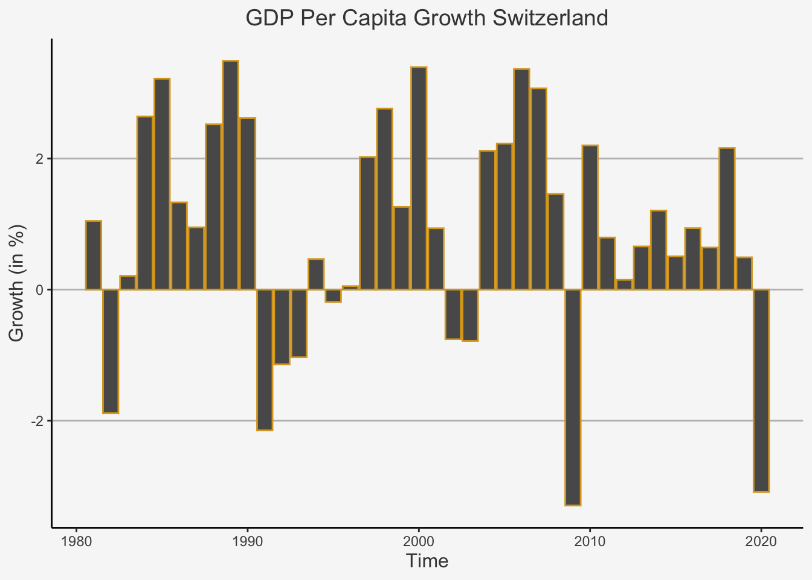
As we can see, there was a largely positive growth in Switzerland of Real GDP Per Capita for the period under consideration, with a mean growth of 0.91%. Importantly, we can observe that there are only very negative periods in three distinct economic events: The banking crisis of the 90s, the financial crisis as well as the COVID pandemic.
Another example of key economic data available is the US Consumer Price Index (CPI) data, which is commonly used to calculate the inflation rate. The inflation rate is one of the most important factors investors consider in determining their expected rates of return. A higher inflation rate would lead to a higher required expected rate of return, as a CHF tomorrow is worth less than a CHF is worth today. The Bureau of Labor Statistics of the US Department of Labor reports the CPI data every month, we have it each year. The year-over-year changes in the CPI are typically used as a common measure of the inflation rate. The year-over-year change means that the inflation rate for a particular month is equal to the percentage change in the CPI for that same month last year.
# Create the plot
macro_ind %>% select(Year, Inflation_Rate) %>% ggplot(aes(Year, Inflation_Rate)) +
geom_line(stat="identity", color = "darkgreen") +
ggtitle("Inflation Rate Switzerland") +
ylab("Rate in %") + xlab("Time") +
scale_color_manual(values=c("tomato3", "khaki3", "lightsteelblue3", "dodgerblue4", "violetred4")) +
geom_hline(yintercept = mean(macro_ind$Inflation_Rate), color = "goldenrod", linetype = "dashed") +
annotate("rect", xmin = 1981, xmax = 1983, ymin = -2, ymax = 6.5,
alpha = .1,fill = "violetred") +
annotate("rect", xmin = 1991, xmax = 1994, ymin = -2, ymax = 6.5,
alpha = .1,fill = "violetred") +
annotate("rect", xmin = 2007, xmax = 2009, ymin = -2, ymax = 6.5,
alpha = .1,fill = "violetred") +
annotate("rect", xmin = 2019, xmax = 2020, ymin = -2, ymax = 6.5,
alpha = .1,fill = "violetred") +
theme(plot.title= element_text(size=14, color="grey26",
hjust=0.5,
lineheight=1.2), panel.background = element_rect(fill="#f7f7f7"),
panel.grid.major.y = element_line(size = 0.5, linetype = "solid", color = "grey"),
panel.grid.minor = element_blank(),
panel.grid.major.x = element_blank(),
plot.background = element_rect(fill="#f7f7f7", color = "#f7f7f7"), axis.title.x = element_text(color="grey26", size=12),
axis.title.y = element_text(color="grey26", size=12),
axis.line = element_line(color = "black")) 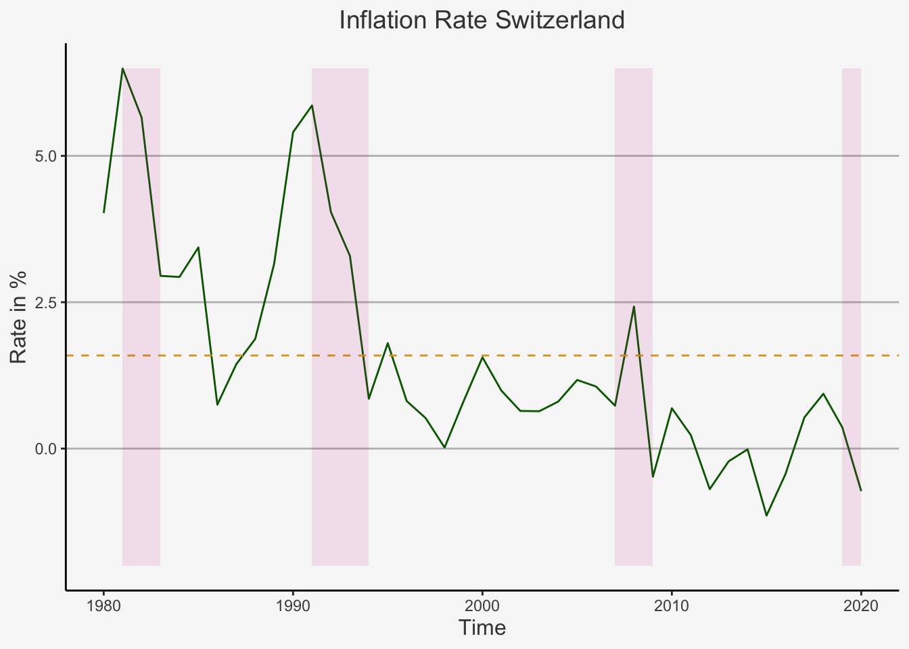
As we can see, there appears a continous downward trend of the inflation rate with three major implications, that all appear to be part of the recession periods in the global economy, which is highlighted in violetred.
Lastly, we can look at the unemployment rate. If unemployment increases, consumer spending usually declines.
# Create the plot
macro_ind %>% select(Year, Unemployment_Rate) %>% ggplot(aes(Year, Unemployment_Rate)) +
geom_line(stat="identity", color = "khaki4") +
ggtitle("Unemployment Rate Switzerland") +
ylab("Rate in %") + xlab("Time") +
scale_color_manual(values=c("tomato3", "khaki3", "lightsteelblue3", "dodgerblue4", "violetred4")) +
geom_hline(yintercept = mean(macro_ind$Unemployment_Rate), color = "lightsteelblue", linetype = "dashed") +
theme(plot.title= element_text(size=14, color="grey26",
hjust=0.5,
lineheight=1.2), panel.background = element_rect(fill="#f7f7f7"),
panel.grid.major.y = element_line(size = 0.5, linetype = "solid", color = "grey"),
panel.grid.minor = element_blank(),
panel.grid.major.x = element_blank(),
plot.background = element_rect(fill="#f7f7f7", color = "#f7f7f7"), axis.title.x = element_text(color="grey26", size=12),
axis.title.y = element_text(color="grey26", size=12),
axis.line = element_line(color = "black")) 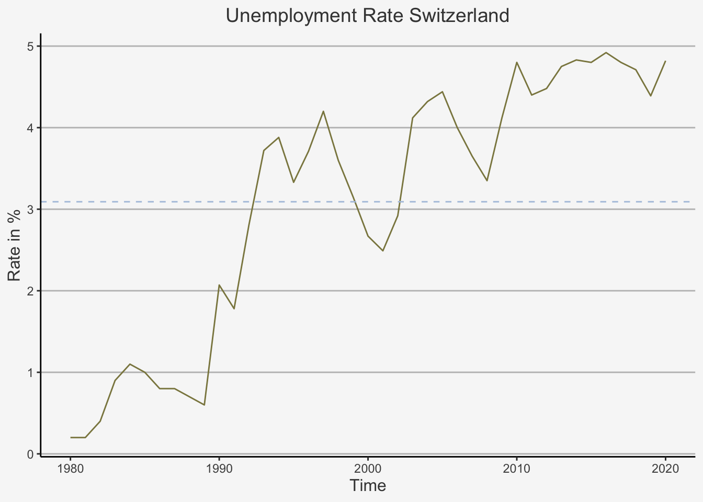
As we can see, also unemployment rates appear to follow a structure based on macroeconomic crises.
As we may understand, unemployment has been on the rise in Switzerland, which is mainly due to the different formulations and adjustments of unemployment beneficiaries during the 90s. Afterwards, we analyse an increasing, but rather weak, growth in unemployment rates. Furthermore, we understand that the spikes in the inflation rate are mainly mirroring the recession-based macroeconomic constitution of Switzerland. Lastly, we can observe that GDP growth per capita has been constantly positive, except for recession-related developments.
5.2 Swiss Fixed Income Securities
The Swiss Government Bond yields are the benchmark for the rates of other Swiss fixed income instruments. They also do depend, to some degree, on the US Treasury Yields, due to the interconnectedness of both macro-oriented economies. As such, knowledge of Government Yields is required to determine whether the yields of other fixed income securities are large enough for the incremental risk we are taking on. In addition, trading strategies can be constructed around the differential between short rates and long-term rates. If Short-Term Rates for 3-months substantially lower than 6-month rates, an investor who expects to hold a Short-Term bond for 3 months may instead purchase a 6-month bond and sell it in 3 months to take advantage of the higher yields on the longer dated instrument. This strategy is known as riding the yield curve.
5.2.1 Shape of the Swiss Yield curve
The Treasury yield curve is a curve comprised of rates on key maturities of Swiss Treasury securities. The yield curve can take on many shapes. It can be:
- upward sloping, which means that short-term rates are lower than long-term rates.
An upward sloping yield curve is also called normal, which implies this is the most typical shape of the yield curve we observe.
The yield curve can be:
- inverted, which means that the short-term rates are higher than long-term rates.
The yield curve can also be:
- flat, which means that the short-term rates are almost the same as the long- term rates.
We can now find dates on which the yield curves showed each of the particular smiles (or structures).
To do so, we will take the largest and smallest as well as minimal absolute value of the difference between a 1-Year and a 30-Year Treasury bond, since these should indicate the behaviour of the yield curve quite precisely.
The slope of the Swiss yield curve has been known as an indicator of future economic activity and rising inflation expectations. The slope is calculated as the difference between the yields of long-term and short-term Treasury securities. In prior recessions, short-term interest rates rose above long-term rates, which is the opposite of the more conventional pattern of long-term interest rates being higher than short-term interest rates.
Swiss_Bonds <- read.csv("~/Desktop/Master UZH/Data/A2_dataset_02.txt", header = T, sep = "\t")
colnames(Swiss_Bonds) <- c("Date", "Year_10", "Year_1", "Year_15", "Year_2", "Year_20",
"Year_3", "Year_30", "Year_4", "Year_5", "Year_6", "Year_7", "Year_8", "Year_9")
Swiss_Bonds_ts <- xts(Swiss_Bonds[,c("Year_1", "Year_10")], order.by = as.Date(Swiss_Bonds$Date))
Swiss_Bonds_ts$Diff = Swiss_Bonds_ts$Year_10 - Swiss_Bonds_ts$Year_1Swiss_Bonds %>%
select(Date, Year_10, Year_1) %>%
mutate(Diff = Year_10 - Year_1) %>%
gather(Treasury, Yield, Year_10:Year_1) %>%
ggplot(aes(x = as.Date(Date), y = Yield, fill = Treasury), ) +
geom_bar(stat = "identity") +
geom_line(aes(y = Diff, x = as.Date(Date), color = "Year 10 - Year 1")) +
ggtitle("Swiss Government Bond Yield - absolute returns and differences") +
ylab("Spread in BPS") + xlab("Time") +
scale_fill_manual(values=c("goldenrod", "lightsteelblue3", "dodgerblue4", "violetred4")) +
scale_color_manual(values=c("violetred4", "khaki3", "lightsteelblue3", "dodgerblue4", "violetred4")) +
scale_y_continuous(
# Features of the first axis
name = "Yield",
# Add a second axis and specify its features
sec.axis = sec_axis(~.*100, name="Spread in BPS")
) +
theme(plot.title= element_text(size=14, color="grey26",
hjust=-0.3,
lineheight=1.2), panel.background = element_rect(fill="#f7f7f7"),
panel.grid.major.y = element_line(size = 0.5, linetype = "solid", color = "grey"),
panel.grid.minor = element_blank(),
panel.grid.major.x = element_blank(),
plot.background = element_rect(fill="#f7f7f7", color = "#f7f7f7"), axis.title.x = element_text(color="grey26", size=12),
axis.title.y = element_text(color="grey26", size=12),
axis.line = element_line(color = "black")) + labs(fill='Swiss Government Bonds') + labs(color='Difference in Yield')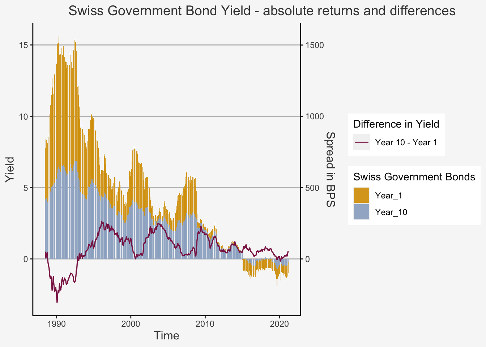
The violet line indicates the difference in yield whereas the stacked bar chart indicates the total return of the government bonds in percent whereas the right y axis indicates the spread of the Yield curve in BPS. As we can observe, the Swiss market has been less severely hit by the financial crisis as other, more exposed, markets. This is resembled in the Yield curve. Although we can observe a certain negative direction, yields of longer-termed treasuries always exceed the ones of shorter termed. However, since 2010 we observe a continuously declining Spread, which results in a difference of practically zero for the last five years of the observational horizon.
5.2.2 The case for mean reversion
When yields are predictable, there is opportunity for investors to make money. One indicator of return predictability is when yields are mean reverting. This means that if yields today are higher than some historical average, yields would have a tendency to decline towards the mean in the future. Conversely, if yields today are lower than some historical average, yields would have a tendency to rise towards the mean in the future. We implement an analysis to determine whether yields for the 10-Year Constant Maturity Treasury exhibit mean reversion. In this analysis, we will use a 20-day moving average of yields.
Swiss_Bonds_ma <- Swiss_Bonds %>%
select(Date, Year_10) %>%
mutate(rolling_mean_50_d = rollmean(Year_10, k = 50, fill = NA),
rolling_mean_100_d = rollmean(Year_10, k = 100, fill = NA))
Swiss_Bonds_ma_ts <- xts(Swiss_Bonds_ma[,-1], order.by = as.Date(Swiss_Bonds_ma[,1]))
Swiss_Bonds_ma_ts %>% tidy() %>%
ggplot(aes(x = index, y = value, color = series)) +
geom_line() +
ggtitle("Swiss Government Bond Yield 10 Year - Actual and Moving Average") +
ylab("Value in %") + xlab("Time") +
scale_fill_manual(values=c("goldenrod", "lightsteelblue3", "dodgerblue4", "violetred4")) +
scale_color_manual(values=c("violetred4", "khaki3", "lightsteelblue3", "dodgerblue4", "violetred4")) +
theme(plot.title= element_text(size=14, color="grey26",
hjust=-0.3,
lineheight=1.2), panel.background = element_rect(fill="#f7f7f7"),
panel.grid.major.y = element_line(size = 0.5, linetype = "solid", color = "grey"),
panel.grid.minor = element_blank(),
panel.grid.major.x = element_blank(),
plot.background = element_rect(fill="#f7f7f7", color = "#f7f7f7"), axis.title.x = element_text(color="grey26", size=12),
axis.title.y = element_text(color="grey26", size=12),
axis.line = element_line(color = "black")) + labs(fill='Swiss Government Bonds') + labs(color='Difference in Yield')## Warning: Removed 148 row(s) containing missing values (geom_path).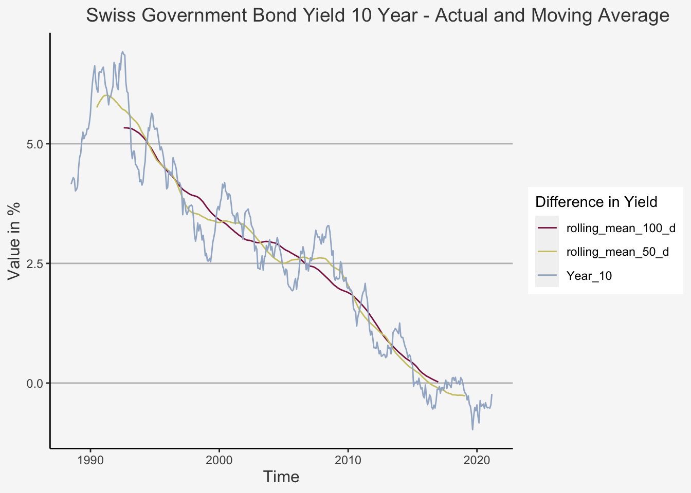
As we can see, the treasury yield exhibits mean reversion. We can see this because it follows up and down its moving average. Consequently, a trading strategy could be to go short in the Treasury if the 100 days MA is below its 50 day MA and buy otherwise. This is because we expect mean-reversion. As such, if the shorter period returns exceed the longer period returns, we expect them to move into the other direction.
5.3 Principal Component Analysis
One of the most fundamental results in fixed income analysis is that virtually all of the variation in interest rates is a result of the level of interest rates. The slope of the term structure and curvature of the yield curve explain the remaining variation. This result can be verified through the use of principal components analysis (PCA).
Swiss_Bonds_full <- Swiss_Bonds %>% subset(Date >= "1997-12-31") %>% select(-Date)
library(stats)
pca <- prcomp(Swiss_Bonds_full, scale. = TRUE)
summary(pca)## Importance of components:
## PC1 PC2 PC3 PC4 PC5 PC6 PC7 PC8 PC9 PC10 PC11 PC12 PC13
## Standard deviation 3.5491 0.58540 0.21082 0.1195 0.04141 0.02224 0.007382 0.002334 0.000495 0.0001955 0.0001872 0.0001831 0.0001585
## Proportion of Variance 0.9689 0.02636 0.00342 0.0011 0.00013 0.00004 0.000000 0.000000 0.000000 0.0000000 0.0000000 0.0000000 0.0000000
## Cumulative Proportion 0.9689 0.99531 0.99873 0.9998 0.99996 1.00000 1.000000 1.000000 1.000000 1.0000000 1.0000000 1.0000000 1.0000000We output the eigenvectors as well. We interpret the signs as the opposite from what is reported in the output (i.e., negatives are positives and positives are negatives). Thus, we add a negative sign to the beginning of the code to make interpretation more consistent with the output.
-pca$rotation## PC1 PC2 PC3 PC4 PC5 PC6 PC7 PC8 PC9 PC10 PC11
## Year_10 0.2801127 -0.16770071 0.15533180 -0.245480481 -0.16238677 -0.26565957 0.23822063 -0.20476159 -0.465397753 -4.462272e-01 -0.169525384
## Year_1 0.2637452 0.56664753 -0.44786724 -0.577264729 0.17744136 0.18121052 0.09169529 -0.04929359 0.018247856 -4.449694e-03 -0.002379213
## Year_15 0.2776030 -0.28728959 -0.08812388 -0.149245908 -0.43115745 0.10666933 0.47098967 0.54392512 0.291127513 9.306038e-02 0.016161827
## Year_2 0.2735860 0.39662099 -0.18987621 0.296856154 -0.40707805 -0.47942260 -0.37338081 0.28566636 -0.151563075 4.720455e-02 0.025633498
## Year_20 0.2752764 -0.34757347 -0.28966100 0.013543670 -0.34472500 0.53299822 -0.48397231 -0.26658342 -0.102697083 -2.174120e-02 -0.002940692
## Year_3 0.2779637 0.26378555 0.02494850 0.445715083 -0.15496516 0.05537054 0.32046445 -0.48285557 0.451186125 -2.102009e-01 -0.129473235
## Year_30 0.2715658 -0.39968519 -0.57741296 0.261729793 0.52008234 -0.29171184 0.09367674 0.01501176 0.003606059 -4.110169e-05 -0.000575919
## Year_4 0.2800823 0.16324589 0.16150069 0.324055786 0.12202157 0.30839719 0.27662290 -0.01688738 -0.396351670 4.086547e-01 0.352005187
## Year_5 0.2810174 0.08267378 0.23498345 0.149842141 0.24980298 0.26623607 -0.03379939 0.32532988 -0.260866606 -2.368637e-01 -0.505301740
## Year_6 0.2812977 0.01570441 0.26297847 -0.002614109 0.25038529 0.10189098 -0.24006845 0.26158691 0.176535890 -9.839002e-02 0.270196617
## Year_7 0.2812197 -0.04110021 0.25983735 -0.115088992 0.17412626 -0.06759702 -0.26361127 0.02446518 0.390598645 -2.980410e-01 0.233448216
## Year_8 0.2809450 -0.08977136 0.23611284 -0.188318362 0.06330848 -0.19096497 -0.14429452 -0.17628863 0.182997208 6.380130e-01 -0.514274936
## Year_9 0.2805599 -0.13162910 0.19953555 -0.229299069 -0.05375073 -0.25633053 0.04784467 -0.25983225 -0.137297149 1.290083e-01 0.427018047
## PC12 PC13
## Year_10 1.432545e-01 0.3852653180
## Year_1 3.121831e-03 -0.0008220080
## Year_15 -3.833379e-02 -0.0159392542
## Year_2 -3.188274e-02 0.0146856001
## Year_20 9.072181e-03 -0.0001289195
## Year_3 1.291737e-01 -0.0986884996
## Year_30 -5.477292e-05 0.0003382548
## Year_4 -1.816899e-01 0.3098295486
## Year_5 -1.640831e-01 -0.4357182294
## Year_6 7.260988e-01 0.1060855489
## Year_7 -6.090525e-01 0.2581623167
## Year_8 3.890995e-02 0.1512694167
## Year_9 -2.452299e-02 -0.6743378937Further, we get the dimensioanal scores of the products, which tell us the contribution of each dimension to the PCs
library(factoextra)
res.var <- get_pca_var(pca)
res.var$coord # Coordinates## Dim.1 Dim.2 Dim.3 Dim.4 Dim.5 Dim.6 Dim.7 Dim.8 Dim.9 Dim.10
## Year_10 -0.9941556 0.098171827 -0.032747612 0.029343081 0.006723830 0.005909039 -0.0017584722 4.780131e-04 2.303503e-04 8.723149e-05
## Year_1 -0.9360651 -0.331714890 0.094420990 0.069002333 -0.007347184 -0.004030647 -0.0006768667 1.150752e-04 -9.031844e-06 8.698561e-07
## Year_15 -0.9852484 0.168179035 0.018578595 0.017839849 0.017852619 -0.002372635 -0.0034767023 -1.269786e-03 -1.440946e-04 -1.819207e-05
## Year_2 -0.9709914 -0.232181526 0.040030389 -0.035484183 0.016855581 0.010663748 0.0027561835 -6.668841e-04 7.501670e-05 -9.227863e-06
## Year_20 -0.9769908 0.203469157 0.061067380 -0.001618919 0.014273774 -0.011855425 0.0035725362 6.223353e-04 5.083030e-05 4.250117e-06
## Year_3 -0.9865286 -0.154419796 -0.005259733 -0.053277775 0.006416528 -0.001231601 -0.0023655710 1.127220e-03 -2.233162e-04 4.109149e-05
## Year_30 -0.9638214 0.233975307 0.121732288 -0.031285415 -0.021534666 0.006488517 -0.0006914932 -3.504475e-05 -1.784832e-06 8.034835e-09
## Year_4 -0.9940478 -0.095563980 -0.034048160 -0.038735444 -0.005052457 -0.006859647 -0.0020419460 3.942335e-05 1.961757e-04 -7.988657e-05
## Year_5 -0.9973665 -0.048397146 -0.049540060 -0.017911119 -0.010343408 -0.005921862 0.0002494968 -7.594781e-04 1.291169e-04 4.630371e-05
## Year_6 -0.9983614 -0.009193348 -0.055442071 0.000312473 -0.010367519 -0.002266351 0.0017721122 -6.106710e-04 -8.737709e-05 1.923394e-05
## Year_7 -0.9980846 0.024060020 -0.054779850 0.013756962 -0.007209918 0.001503554 0.0019458982 -5.711362e-05 -1.933282e-04 5.826305e-05
## Year_8 -0.9971095 0.052552063 -0.049778162 0.022510307 -0.002621367 0.004247615 0.0010651382 4.115434e-04 -9.057514e-05 -1.247231e-04
## Year_9 -0.9957427 0.077055543 -0.042066807 0.027408864 0.002225617 0.005701534 -0.0003531748 6.065748e-04 6.795573e-05 -2.521941e-05
## Dim.11 Dim.12 Dim.13
## Year_10 3.173069e-05 -2.623009e-05 -6.108368e-05
## Year_1 4.453260e-07 -5.716113e-07 1.303291e-07
## Year_15 -3.025069e-06 7.018966e-06 2.527163e-06
## Year_2 -4.797916e-06 5.837770e-06 -2.328397e-06
## Year_20 5.504203e-07 -1.661128e-06 2.044015e-08
## Year_3 2.423398e-05 -2.365187e-05 1.564703e-05
## Year_30 1.077969e-07 1.002899e-08 -5.363018e-08
## Year_4 -6.588611e-05 3.326766e-05 -4.912337e-05
## Year_5 9.457919e-05 3.004382e-05 6.908297e-05
## Year_6 -5.057370e-05 -1.329496e-04 -1.681983e-05
## Year_7 -4.369536e-05 1.115183e-04 -4.093154e-05
## Year_8 9.625874e-05 -7.124461e-06 -2.398371e-05
## Year_9 -7.992654e-05 4.490192e-06 1.069160e-04res.var$contrib # Contributions to the PCs## Dim.1 Dim.2 Dim.3 Dim.4 Dim.5 Dim.6 Dim.7 Dim.8 Dim.9 Dim.10 Dim.11
## Year_10 7.846313 2.81235286 2.41279690 6.026067e+00 2.6369464 7.0575009 5.6749069 4.19273084 21.659506807 1.991187e+01 2.873886e+00
## Year_1 6.956151 32.10894205 20.05850617 3.332346e+01 3.1485438 3.2837254 0.8408026 0.24298578 0.033298425 1.979977e-03 5.660653e-04
## Year_15 7.706343 8.25353083 0.77658179 2.227434e+00 18.5896747 1.1378346 22.1831267 29.58545393 8.475522855 8.660235e-01 2.612047e-02
## Year_2 7.484928 15.73082093 3.60529753 8.812358e+00 16.5712535 22.9846032 13.9413232 8.16052684 2.297136578 2.228270e-01 6.570762e-02
## Year_20 7.577707 12.08073154 8.39034965 1.834310e-02 11.8835328 28.4087102 23.4229195 7.10667206 1.054669094 4.726799e-02 8.647672e-04
## Year_3 7.726384 6.95828176 0.06224277 1.986619e+01 2.4014200 0.3065897 10.2697464 23.31495011 20.356891910 4.418443e+00 1.676332e+00
## Year_30 7.374796 15.97482524 33.34057247 6.850248e+00 27.0485641 8.5095798 0.8775332 0.02253530 0.001300366 1.689349e-07 3.316827e-05
## Year_4 7.844611 2.66492212 2.60824737 1.050122e+01 1.4889263 9.5108826 7.6520231 0.02851836 15.709464658 1.669987e+01 1.239077e+01
## Year_5 7.897078 0.68349537 5.52172205 2.245267e+00 6.2401530 7.0881646 0.1142399 10.58395333 6.805138616 5.610441e+00 2.553298e+01
## Year_6 7.912840 0.02466286 6.91576738 6.833566e-04 6.2692794 1.0381771 5.7632860 6.84277132 3.116492030 9.680596e-01 7.300621e+00
## Year_7 7.908454 0.16892271 6.75154501 1.324548e+00 3.0319955 0.4569358 6.9490904 0.05985450 15.256730142 8.882842e+00 5.449807e+00
## Year_8 7.893010 0.80588970 5.57492723 3.546381e+00 0.4007963 3.6467621 2.0820909 3.10776801 3.348797813 4.070606e+01 2.644787e+01
## Year_9 7.871385 1.73262202 3.98144368 5.257806e+00 0.2889141 6.5705340 0.2289112 6.75127962 1.885050705 1.664314e+00 1.823444e+01
## Dim.12 Dim.13
## Year_10 2.052186e+00 1.484294e+01
## Year_1 9.745829e-04 6.756972e-05
## Year_15 1.469480e-01 2.540598e-02
## Year_2 1.016509e-01 2.156669e-02
## Year_20 8.230447e-03 1.662024e-06
## Year_3 1.668584e+00 9.739420e-01
## Year_30 3.000072e-07 1.144163e-05
## Year_4 3.301123e+00 9.599435e+00
## Year_5 2.692325e+00 1.898504e+01
## Year_6 5.272195e+01 1.125414e+00
## Year_7 3.709450e+01 6.664778e+00
## Year_8 1.513984e-01 2.288244e+00
## Year_9 6.013772e-02 4.547316e+01res.var$cos2 ## Dim.1 Dim.2 Dim.3 Dim.4 Dim.5 Dim.6 Dim.7 Dim.8 Dim.9 Dim.10
## Year_10 0.9883454 9.637708e-03 1.072406e-03 8.610164e-04 4.520988e-05 3.491674e-05 3.092224e-06 2.284965e-07 5.306127e-08 7.609333e-09
## Year_1 0.8762179 1.100348e-01 8.915323e-03 4.761322e-03 5.398111e-05 1.624612e-05 4.581485e-07 1.324230e-08 8.157420e-11 7.566496e-13
## Year_15 0.9707143 2.828419e-02 3.451642e-04 3.182602e-04 3.187160e-04 5.629397e-06 1.208746e-05 1.612356e-06 2.076326e-08 3.309514e-10
## Year_2 0.9428243 5.390826e-02 1.602432e-03 1.259127e-03 2.841106e-04 1.137155e-04 7.596547e-06 4.447345e-07 5.627506e-09 8.515345e-11
## Year_20 0.9545110 4.139970e-02 3.729225e-03 2.620899e-06 2.037406e-04 1.405511e-04 1.276301e-05 3.873012e-07 2.583719e-09 1.806349e-11
## Year_3 0.9732387 2.384547e-02 2.766479e-05 2.838521e-03 4.117183e-05 1.516842e-06 5.595926e-06 1.270624e-06 4.987014e-08 1.688510e-09
## Year_30 0.9289517 5.474444e-02 1.481875e-02 9.787772e-04 4.637419e-04 4.210085e-05 4.781628e-07 1.228135e-09 3.185625e-12 6.455857e-17
## Year_4 0.9881310 9.132474e-03 1.159277e-03 1.500435e-03 2.552732e-05 4.705476e-05 4.169544e-06 1.554201e-09 3.848491e-08 6.381864e-09
## Year_5 0.9947400 2.342284e-03 2.454218e-03 3.208082e-04 1.069861e-04 3.506845e-05 6.224865e-08 5.768070e-07 1.667117e-08 2.144033e-09
## Year_6 0.9967254 8.451766e-05 3.073823e-03 9.763936e-08 1.074855e-04 5.136345e-06 3.140382e-06 3.729191e-07 7.634756e-09 3.699445e-10
## Year_7 0.9961729 5.788846e-04 3.000832e-03 1.892540e-04 5.198292e-05 2.260674e-06 3.786520e-06 3.261966e-09 3.737581e-08 3.394583e-09
## Year_8 0.9942274 2.761719e-03 2.477865e-03 5.067139e-04 6.871567e-06 1.804223e-05 1.134519e-06 1.693679e-07 8.203856e-09 1.555585e-08
## Year_9 0.9915036 5.937557e-03 1.769616e-03 7.512459e-04 4.953371e-06 3.250749e-05 1.247324e-07 3.679330e-07 4.617981e-09 6.360187e-10
## Dim.11 Dim.12 Dim.13
## Year_10 1.006837e-09 6.880175e-10 3.731216e-09
## Year_1 1.983153e-13 3.267394e-13 1.698567e-14
## Year_15 9.151041e-12 4.926589e-11 6.386554e-12
## Year_2 2.302000e-11 3.407956e-11 5.421431e-12
## Year_20 3.029625e-13 2.759346e-12 4.177996e-16
## Year_3 5.872859e-10 5.594107e-10 2.448294e-10
## Year_30 1.162017e-14 1.005807e-16 2.876196e-15
## Year_4 4.340979e-09 1.106737e-09 2.413105e-09
## Year_5 8.945223e-09 9.026310e-10 4.772457e-09
## Year_6 2.557699e-09 1.767560e-08 2.829066e-10
## Year_7 1.909285e-09 1.243633e-08 1.675391e-09
## Year_8 9.265745e-09 5.075795e-11 5.752185e-10
## Year_9 6.388252e-09 2.016182e-11 1.143104e-08- The first principal component has approximately equal weights at all maturities. Thus, it is often thought to capture the level of interest rates.
- The second principal component has negative factors in the short maturities, becomes more neutral (i.e., closer to zero) for the intermediate maturities, and becomes positive for the long maturities. Thus, it is believed the second component captures the slope of the term structure.
- Finally, the third principal component has positive weights in the short and long end of maturities but has negative weights in the intermediate maturity. Thus, the third component is said to capture the curvature of the yield curve.
5.4 Bond Valuation Strategies
The objective of fixed income security management is to find securities which adhere to a given risk and return structure. Consequently, portfolio bond management works with the same principles as the security portfolio management we have seen in the previous chapter. Consequently, you allocate funds into different FI securities such that the expected return of the portfolio can be maximised for a given level of risk, or vice versa.
In order to assess the risk of bonds, we first need to derive common bond structures as well as their parameters. Then, we can derive a connection between the individual parameters and understand how rates, yields and prices of bonds are related. Understanding this relationship, we can then create certain risks each bond is underlying to. The risks include credit risk, liquidity risk, and market risk among others. The first two can be handled by selecting only securities with predetermined default risk, for example, with a minimum credit rating and with proper liquidity characteristics. The market risk of a fixed income security is captured by duration, modified duration, keynote duration, or factor duration.
Having understood how the risks can be minimised, we can then proceed to model term rate structures and define functions which capture the relative risk approppriately. We show how to compute prices of bonds based on YTM, spot rates and forward rates. Ultimately, we dig into FI derivatives, which are products whose value structure primarily depends on an underlying interest rate.
5.4.1 The most common bonds
When you buy a bond you are loaning a tradeable security in form of money to the corporation of interest. The corporation is obligated to pay back the principal and to pay interest as stipulated by the bond. The bond owner receives a fixed stream of income, unless the corporation defaults on the bond. For this reason, bonds are called “fixed income” securities.
Importantly, bond prices move in opposite direction to interest rates, so a decrease in interest rates will cause a bond “rally,” where bond prices increase. Long-term bonds are more sensitive to interest-rate changes than short-term bonds. The interest rate on your bond is fixed, but in the market interest rates fluctuate. Therefore, the market value of your bond fluctuates too.
Let’s first introduce the two basic forms of bonds, Zero-Coupon and Coupon Bonds.
5.4.1.1 Zero-Coupon Bonds
Zero-Coupon Bonds (ZCB) are called as such because they do not pay any interest or principal until maturity. It has a par value or face value, which is the payment made to the bondholder at maturity. The bond sells for less than the par value, which is the reason it is a discount bond.
Since the ZCB does not pay any interest, the general formula is:
\[ P = \frac{N}{(1+y)^T} \]
whereas V is the Present Value of the bond, (1+y) the interest rate (= yield) and T is the time to maturity. The yield to maturity of a zero-coupon bond of maturity years is called the spot rate. If you compound it more than once per year, the formula switches to:
\[ P = \frac{V}{(1+y/k)^{kT}} \]
whereas k is the frequency of compounding, in annual terms. For instance, if you compound quarterly, then k = 4.
If we assume continuous compounding, then we obtain the following:
\[ P = Ve^{-y_TT} \]
5.4.1.2 Coupon Bonds
Coupon bonds make regular interest payments. Coupon bonds generally sell at or near the par value when issued. At maturity, one receives a principal payment equal to the par value of the bond and the final interest payment.
The general formula for a coupon bond is:
\[ P = \sum_{t=0}^{kT} \frac{cN}{(1+y/k)^t} + \frac{N}{(1+y/k)^{kT}} \]
whereas c is the coupon rate.
As we likely know, we can transform this formula based on the condition of finite geometric series. Therein, we understand that each coupon payment can be transposed to an annuity payment which pays \((c/k)P\) for \(kT\) periods, we can re-write the above expression to:
\[ P = (c/k) N \left( \frac{1}{y/k} - \frac{1}{(y/k)(1+y/k)^{kT}} \right) + \frac{N}{(1+y/k)^{lT}} \]
A coupon bond is a bundle of zero-coupon bonds, one for each coupon payment and a final one for the principal payment. The components have different maturity dates and therefore different spot rates.
5.4.2 Yield-to-Maturity (YTM)
The yield to maturity, often shortened to simply yield, is the average rate of return, including the loss (or gain) of capital because the bond was purchased above (or below) par. This occurs because the actual yield trades always at market value and not at par value. Further, at maturity you only receive the par value and not the actual market value of the bond.
As such, we can use the same formula as above, but instead of the price, we now need to source for the r which holds the equality condition of the function above. If we do not trade at par, then the YTM will inevitably be different from both the current yield (which is the coupon / traded value) as well as the coupon rate (coupon / par value).
In order to conceptualise this, let’s consider an example:
- T = 10
- C = 50
- P = 1500
- N = 1000
- k = 4 (quarterly compounded)
# Create the input parameters
Ti = 11
C = 0.0575
y = 0.01391
N = 1000
k = 2
# Create the function
market_value = function(Ti, C, y, N, k){
# Computes Bond Value corresponding to the input parameters
# INPUT:
## C = Coupon payment
## T = Time to Maturity (in years)
## r = Vector of yields to maturity
## N = Par Value
## k = Compounding Frequency (in times per year)
coupon_freq = C/k
yield_freq = y/k
periods = Ti*k
bond_coupon = rep(coupon_freq, periods)
bond_df <- as.data.frame(bond_coupon)
for (i in 1:periods){
bond_df$cf[i] = N * coupon_freq
bond_df$ytm[i] <- yield_freq
bond_df$period[i] <- i
bond_df$FV[i] <- ifelse(bond_df$period[i] == k*Ti, N, 0)
}
bond_df$cf_pv <- (bond_df$cf + bond_df$FV)/((1+bond_df$ytm)^bond_df$period)
sum_v <- sum(bond_df$cf_pv)
return(sum_v)
}
# Create a data frame
mv = market_value(Ti, C, r, N, k)
mv## [1] 905.2055This function provides us with a value for the Price fo the Bond of 1443.184.-
In essence, we can state the following relationship:
\[ price > par \rightarrow Coupon Rate > Current Yield > YTM \]
whereas the opposite holds, as well. This is because if the price is higher than the par, then the buyers pay up a higher rent to make up for the difference.
As we stated, a coupon bond is a bundle of zero-coupon bonds, one for each coupon payment and a final one for the principal payment. The component zeros have different maturity dates and therefore different spot rates. However, since depicting the individual, time appropriate spot rates is difficult, we simplify the model by defining that the yield we use is simply an average of forward rates to price future, time-discrete cash flows during discrete future time periods.
Consequently, we can either take one big average (the yield) and discount each future cash flow by this average, or we take the individual forward rates, specific to each future cash flow, and discount the cash flows by this specific, or distinct, rate. This concept provides an introduction to the interconnections between yields, forward rates and discount factors. In essence, we will show that we include time-discrete forward rates into a model of bond prices by combining each time-discrete rate at each distinct maturity. Based on this, we can then construct a piece-wise rate model which calculates the forward rate for each discrete time to maturity. Then, we can combine these building blocks to create one continuous yield curve.
In order to do so, we will focus explicitly on the term structure of the interest rates.
5.4.3 Term Structure
In FI securities, the notion term defines the maturity of the debt, which is the date on which the principal amount of a debt instrument becomes due. Based on this, the notion term structure is the schedule of interest rates defined and posted at each maturity date. A term structure can be described by breaking down the time interval between the present time and the maturity time of a bond into short time segments with a constant interest rate within each segment, but with interest rates varying between segments. Thus, the term structure of interest rates is a description of how, at a given time, the yield depends on the maturity. Consequently, it is also referred to as yield curve. The yield curve is evidently dependent on the maturity of the bond. If the maturity increases, higher yields can convince lenders to wait longer for the return of the principal. On the other hand, longer maturity bonds are inherently more risky than shorter maturity securities. Thus, they require higher yields to compensate for the respective risk.
When considering term structures, our objective is to create a model of bond prices that reflects the baseline dynamic of the interest rate term structure. In order to do so, we need to catch up on the connection between yields and forward rates again and define forward rates of bond returns at various maturities. When averaging these rates across time, we can define a yield calculation (and thus obtain the yield we use normally in the formulas above). We then need to find a way to interpolate rates across maturities. To do so, we employ “regression splines” to interpolate and extrapolate values of forward rates from the term structure. Based on these “polations” we then are able to price bonds, collaterals as well as build discount rates to evaluate expected cash flows.
5.4.3.1 The interconnection of Yields, Prices and Forward Rates
Remember that the price of the bond depends on the yield, which is given as a function of time to maturity:
5.4.3.1.1 Prices and Yields
\[ P_T = \frac{N_T}{(1+y^d(T))^{T}} \]
We have seen that increasing the maturity or frequency of the bond (and payments) influences the yield if we assume that the price of the bond remains constant. Also, we understand that certain events between two maturities can alter the yield or other variables of the model. Thus, at each time period, we obtain a different discount rate, based on the actual time to maturity (remember we only take the average then of all these payments). Based on these piece-wise functions, we can then obtain the yield curve which quantifies the yield on each maturity.
The expression above translates to smaller piece-wise functions once we increase the frequency of payments, up to the extreme of obtaining continuously compounded returns defined as:
\[ P_T(\theta) = N_T e^{-y_T T} \]
This expression is identical to the present value of receiving the entire cash flow of the face value at maturity. Consequently, this can also be considered a form of Zero-Coupon Bond. If the bond has coupons, we can consider each of the coupon payments as a mini-zero bond. Taking the sum of the present value of each of the mini ZCB gives us the value of the bond, now quantified as a portfolio of mini-zeros. We deliberately switched to the idea of ZCB as parts of continuously compounded yields to obtain maturity-based piece-wise forward rates due to the definition of the respective yields, as we can see below.
The yield \((y_T)\) is the rate from date 0 to date T, or the maturity. As we defined, it quantifies the stream of rates based on each time-discrete, intermediate maturity from 0 to T. Now, suppose we define forward rates as \(r(t, \theta)\), whereas each t is one of the time-discrete, intermediate maturity dates between time 0 and the ultimate maturity T. The forward rate is thus the interest contracted now to be paid for a future investment between the time s and t. Further, \(\theta\) contains the entire set of the information we require about the shape of r across all sub-maturities. In this case, we can estimate the forward curve from bond prices \(P(t)\) based on the T’th maturity with:
\[ r(t, \theta) = - \frac{\Delta log(P(T_{i}))}{\Delta T_{i}} = - \frac{log(P(T_{i})) - log(P(T_{i-1}))}{T_i - T_{i-1}} \]
whereas the \(\Delta\) equals the difference in one maturity-based price vs. the previous maturity-based price (i - (i-1)). Also, P is considered as price relative to its par value. Therein, the difference of the previous and this price can take any functional form (in the simplest case, this would just be a linear model (e.g. 0.01 + 0.5t). In this case, the difference between maturity 1 and 2 would be (0.01+0.5*2) - (0.01 + 0.5) = \(\delta f/\delta t\) = 0.5.
5.4.3.1.2 Yields and Forward Rates
Based on this, the yield is the time average of each sub-maturity forward rate from 0 to T of a zero bond, since we defined a continuously compounding yield as a piece-wise combination of mini ZCB. To account for the continuity, we use an integral (defined as cumulative sum) to compute the average:
\[ y_T(\theta) = \frac{1}{T} \int_0^T r(t, \theta) dt \]
therein, the numerator is the cumulative sum of the forward rates at each sub-maturity (whereas rdt is a fractionally small change in maturity), and the denominator is the number of maturity years.
5.4.3.1.3 Prices and Forward Rates
Based on this, let’s define again the price of a ZCB. When using continuous compounding we get that it is:
\[ P_T(\theta) = N_T e^{-y_T T} = N_T e^{\int_0^T r(t, \theta) dt} \]
note that we simply replaced the \(y_T\) part.
5.4.3.1.4 Redefining the Price and Yield condition of a ZCB
If we now consider both the discrete and continuous compounding of ZCB, we can set them equal and obtain the relation between the discrete and continuous yield.
\[ \begin{align} \frac{N_T}{(1+y^d(T))^{T}} &= N_T e^{-y_T T} \\ e^{y_T T} &= (1+y^d(T))^{T} \\ y_T &= \log(1+y^d(T)) \end{align} \]
Let’s quickly consider a concrete example to facilitate the theory discussed.
# Define both maturities and prices of the bonds
maturity <- c(1, 5, 10, 15, 20, 25, 30) # in years
price <- c(101, 97, 95, 91, 92, 93, 99) # in percentage of face value
maturity <- c(1, 5, 10, 20, 30) # in years
price <- c(99, 98, 96, 93, 89)
# Calculate the fwd rates
fwd_init<- -log(price[1]/100)
fwd <- -diff(log(price/100))/diff(maturity)
# Calculate the yield
yield <- c(fwd_init, fwd_init + cumsum(fwd*diff(maturity)))
# Now, we create the prices by:
prices <- 100*exp(-yield)
prices## [1] 99 98 96 93 89As we can see, the calculations all add up to obtain the exact same prices again. Especially, we figured that
- the yields are solely the accumulation of forward rates based on each additional sub-maturity.
- the initial forward rate is simply the par weighted logarithm of the first period.
- we then calculate the yields as cumulative sums by multiplying each forward rate with the maturity interval.
- Finally, we recover each bond price by inverting the process of creating forwards from prices.
As such, we were able to show how Yields, Prices and Forward Rates are interlinked with each other.
5.4.3.2 Structure of the forward rate
We now considered how the forward rate depends both on the yield as well as the prices. However, when considering the forward rate, we implicitly assumed a parametric structure by observing both the prices and the maturities of the bond. Based on this, we were able to depict a parametric model which was then defined as differenced logarithmic term, without needing to write a function which generalizes the structural parameters well. However, in reality, we usually need to estimate the forward rate curve. This is where the parameter \(\theta\) comes into play.
In essence, the forward rate is composed of a polynomial term model which identifies long-term trends and short-term volatility structures. As such, we assume the following form:
\[ r(t, \theta) = \theta_0 + \theta_1 t + \theta_2 t^2 + ... + \theta_p t^p \]
whereas t is the maturity (or sub-maturity).
We use calculus to integrate this formula to obtain the yields. This is a simple arithmetic operation yielding:
\[ \int_0^T r(t, \theta) dt = \theta_0 T + \theta_1 \frac{T^2}{2} + \theta_2 \frac{T^3}{3} + ... + \theta_p \frac{T^{p+1}}{p+1} \]
We then can estimate the yield curve (and then the zero-coupon bond price) using the integrated forward rates divided by the maturity T to get the yield as:
\[ y_T(\theta) = \theta_0 + \theta_1 \frac{T}{2} + \theta_2 \frac{T^2}{3} + ... + \theta_p \frac{T^{p}}{p+1} \]
5.4.4 Estimating the Term Structure - Parametric and Non-Parametric Models
As we have now seen, the primary target of term structure estimation approaches is to quantify the spot rate (yield curve), forward rate or discount curve from a set of coupon bonds with different maturities. As direct methods to do so, such as bootstrapping, would severely overfit the given data, leading to imprecise generalisations and unsmooth curves. Consequently, indirect functions have been proposed, in both parametric as well as non-parametric form. These are usually used to estimate the curves of interest. To do so, we define bond prices as idiosyncratic error and structural terms:
\[ \hat{p} = \iota^T(C\cdot D) \]
Which is the matrix consisting of appropriately discounted cash flows stemming from coupon and prinicpal payments. Thus, the market prices of set of coupon bonds p can be expressed as the sum of the theoretical bond prices \(\hat{p}\) plus an idiosyncratic error vector:
\[ p = \hat{p} + \epsilon \]
whereas this is a non-linear, non-convex function. The estimated parameter vector \(\hat{\beta}\) is then obtained by a possible weighted nonconvex optimization procedure. We will now introduce different parametric and non-parametric options to estimate the term structure of interest rates.
5.4.4.1 Parametric approach: Nelson/Siegel and Svensson Methods
Nelson and Siegel (1987) propose a parsimonious function for modelling the forward rate as a solution to a second-order differential equation for the case of equal roots:
\[ r(t, \theta) = \theta_0 + \theta_1 \exp(-\frac{t}{\tau_1}) + \theta_2\left[\frac{t}{\tau_1}\exp(-\frac{t}{\tau_1})\right] \]
Based on this, we obtain the yield curve again as the average of the forward rates:
\[ y_T(\theta) = \frac{1}{T}\int_0^Tr(t, \theta)dt = \theta_0 + \theta_1 \frac{1-\exp(-\frac{t}{\tau_1})}{\frac{t}{\tau_1}} + \theta_2\left[\frac{1-\exp(-\frac{t}{\tau_1})}{\frac{t}{\tau_1}}-\exp(-\frac{t}{\tau_1})\right] \]
As such, we define a parametric form for both the forward rates as well as the relation to the yield curves.
Based on this, we can theoretically create many possible shapes, including monotonic, humped, U-shapes or S-shapes. Consequently, Svensson (1994) adds the term:
\[ \beta_3\left[\frac{1-\exp(-\frac{t}{\tau_2})}{\frac{t}{\tau_2}}-\exp(-\frac{t}{\tau_2})\right] \]
to increase the flexibility.
Lastly, in order to account for potential multicollinearity issues once we introduce both \(\tau_1\) and \(\tau_2\), de Pooter (2007) proposes to adjust the last term in the second order equation by doubling the numerator. This is also known as Adjusted Svenson approach.
5.4.4.2 Non-Parametric approach: Piecewise Regression Settings and Splines
We now have encountered that the form of the forward rates and the consecutive yield curve is usually not pre-determinated. As such, we need to estimate the forward rate curve. However, given the \(\theta\) of our model, we may not directly understand which form the function will have. This is where non-parametric modeling comes into play. Remember, the common models consisting of the predictor variables discussed are useful if we have a parametric form. However, once we encounter a relationship whose underlying functional form cannot be pre-determined, we encounter a model which is given as:
\[ m_t + s_t = f(x) + \epsilon_t \]
whereas f(x) is unknown in advance and cannot explicitly be deduced by primary data analysis. Regression settings which adhere to such forms are called specifications of non-linear regressions. There are generally two ways to circumvent this issue.
5.4.4.2.1 Piecewise Regressions
Secondly, we can split up the time-series into pieces which follow a parametric form. In essence, we introduce cut-off points in which the slope of f can change. Doing so, we transform a non-linear model into multiple linear sub-models. In the case of one cut-off point, we define models in which we state that \(x_{1,t} = x\) and
\[ x_{2,t} = (x-c)_+ = \begin{cases} 0 && \text{if } x < c \\ x-c && \text{if } x \geq c \end{cases} \]
This forces the slope to bend at point C. We can certainly also expand this to include multiple cut-off points in the data.
5.4.4.2.2 Splines
One way to circumvent this issue is by using Splines. They are handy for using flexible shaped relationships in the data. The main argument in favour of splines is that they can estimate any smooth non-linear shaped relationship without previously specifying the shape of the model in advance. The shape of the trend is estimated automatically from the data.
In essence, splines are piece-wise polynomial functions, since the spline form combines different polynomials at different intervals. Splines provide a way to smoothly interpolate between fixed points, called knots. Polynomial regression is computed between knots. In other words, splines are series of polynomial segments strung together, joining at knots. Now, remember that we defined the forward rates as combination of piece-wise functions based on their sub-maturities. In that case, we can presume that the polynomials are pieces of the term structure of interest rates, whereas each discrete sub-part depends on both the maturity and its price (as we have seen in the previous example). Whole sections can be marked off by a knot (q) at a location in the term structure paired data. A distinct polynomial function is estimated for each range and domain of data between each knot. This is considered as the spline, because it adds polynomials at each piece of the function distinctively.
The model specification of any spline is:
\[ f(x) = \beta_0 + \sum_{i=1}^q \beta_iB_i(t) \]
Here, the \(B_i(t)\) are called B-spline basis functions, which, in general, are linear combinations of a specific known variable of the model. In the case of trend or seasonality modeling (or, in general, time-series modelling), they are naturally functions of time. In order to use B-Splines, you need only to define the number q, which is the number of basis functions to use w.r.t. the known variable of interest (or, equivalently, the number of knots, or discrete sections, of the curve). The higher q, the more flexible, or less smooth, the trend becomes.
You can easily see that a spline can be extended to potentially limitless polynomial degrees. However, usually, people use the third order polynomial to draw splines (= cubic forms). This is also known as Natural Cubic Splines.
Using splines bears two important considerations. The first is related to the number and locations of the knots. In general, there are two approaches. First, since the regression spline has the most variation at intervals that contain a substantial amount of knots, an idea is to:
- place many knots at intervals we deem as variable, and fewer at intervals which we deem stable
The most common way, however, is to specify the desired degrees of freedom, and then have the software automatically place the corresponding number of knots at uniform quantiles of the data.
Secondly, we should ask how many degrees of freedom we should choose. This is mostly done through cross-validation in which we obtain different distributions of a test and training dataset and compute overall error scores for different model configurations (e.g. different DOF). Based on the comparison, we then choose the model configuration with the lowest error.
5.4.4.3 Applying the term structure estimation in R: The Termstrc package
In order to show you how one could approach a term structure valuation approach, we will follow the method used by Hayden and Ferstl (2007) who provide a handy package called termstrc which is accessible with the code below. In essence, this package includes the most common term structure estimation strategies, such as the parametric Nelson and Siegel approach and the Svensson approach, as well as the non-parametric design approach, where individually estimated zero-coupon yield curves are substracted from a risk-free reference curve.
First, install the package using the following commands below:
# For mac users (at least I don't know if Windows users experience the same pain), there is an important workaround for installing the package. CRAN removed it so you need to install it remotely from an URL source. However, doing so requires you to also use the rgl package, which is not working if OpenGL is depreciated (which it certainly is for any MacBook purchased / with updated software after 2019). So, in order to find a non-depreciated form of OpenGL, you:
# first download the XQuartz application online (https://www.xquartz.org/). It will automatically re-start your computer, so don't worry about this.
# then create a new R session.
# then fully re-install all your packages (which we did above by changing the second command in the apply function from "require" to "install packages")
# then use the require command again to set the library status for all the packages
# then run the commands below:
install.packages("rgl")## Error in install.packages : Updating loaded packageslibrary(rgl)
remotes::install_url("https://cran.rstudio.com/src/contrib/Archive/termstrc/termstrc_1.3.7.tar.gz")## Downloading package from url: https://cran.rstudio.com/src/contrib/Archive/termstrc/termstrc_1.3.7.tar.gz## These packages have more recent versions available.
## It is recommended to update all of them.
## Which would you like to update?
##
## 1: All
## 2: CRAN packages only
## 3: None
## 4: glue (1.6.1 -> 1.6.2) [CRAN]
## 5: yaml (2.2.2 -> 2.3.5) [CRAN]
## 6: evaluate (0.14 -> 0.15 ) [CRAN]
## 7: rlang (1.0.0 -> 1.0.1) [CRAN]
## 8: jsonlite (1.7.3 -> 1.8.0) [CRAN]
##
##
checking for file ‘/private/var/folders/97/v7mhh7_10r54n7qdx4ykd6wc0000gn/T/RtmpSFmz9w/remotes590a1e7639a2/termstrc/DESCRIPTION’ ...
✓ checking for file ‘/private/var/folders/97/v7mhh7_10r54n7qdx4ykd6wc0000gn/T/RtmpSFmz9w/remotes590a1e7639a2/termstrc/DESCRIPTION’ (350ms)
##
─ preparing ‘termstrc’:
##
checking DESCRIPTION meta-information ...
✓ checking DESCRIPTION meta-information
##
─ cleaning src
##
─ checking for LF line-endings in source and make files and shell scripts
##
─ checking for empty or unneeded directories
##
─ looking to see if a ‘data/datalist’ file should be added
##
─ building ‘termstrc_1.3.7.tar.gz’
##
## library(termstrc)
# Based on this, you should be able to download the termstrc package The authors work with three distinct datasets on bond returns to evaluate their functions. In order to use the package, you need to set up an identical structure to the datasets provided. The authors therein offer a code snippet to show you how to manipulate your data such that you retain the identical structure. This is done here. We will show you how to create the datasets (we will use the datasets here that the authors provide) by taking each step.
# This is the data the authors provide
data(govbonds)
# In this dataset, we have information on threee countries (D,A,F) and their respective government bonds. Especially, we have data on:
## ISIN
## Maturity Date
## Issue Date
## Coupon Rate
## Price
## Accrued Price
## CF ISIN
## CF value
## CF Date
# In order to create the correct dataframe, thus, we need these 9 variables. Once we have them, we can create vectors accordingly:
## First, we need to create usual vectors which combine the data for the respective variable
ISIN_countries <- c(govbonds[["GERMANY"]]$ISIN[1:length(govbonds[["GERMANY"]]$ISIN)], govbonds[["AUSTRIA"]]$ISIN[1:length(govbonds[["AUSTRIA"]]$ISIN)], govbonds[["FRANCE"]]$ISIN[1:length(govbonds[["FRANCE"]]$ISIN)])
MATURITYDATE_countries <- c(govbonds[["GERMANY"]]$MATURITYDATE[1:length(govbonds[["GERMANY"]]$MATURITYDATE)], govbonds[["AUSTRIA"]]$MATURITYDATE[1:length(govbonds[["AUSTRIA"]]$MATURITYDATE)], govbonds[["FRANCE"]]$MATURITYDATE[1:length(govbonds[["FRANCE"]]$MATURITYDATE)])
ISSUEDATE_countries <- c(govbonds[["GERMANY"]]$ISSUEDATE[1:length(govbonds[["GERMANY"]]$ISSUEDATE)], govbonds[["AUSTRIA"]]$ISSUEDATE[1:length(govbonds[["AUSTRIA"]]$ISSUEDATE)], govbonds[["FRANCE"]]$ISSUEDATE[1:length(govbonds[["FRANCE"]]$ISSUEDATE)])
COUPONRATE_countries <- c(govbonds[["GERMANY"]]$COUPONRATE[1:length(govbonds[["GERMANY"]]$COUPONRATE)], govbonds[["AUSTRIA"]]$COUPONRATE[1:length(govbonds[["AUSTRIA"]]$COUPONRATE)], govbonds[["FRANCE"]]$COUPONRATE[1:length(govbonds[["FRANCE"]]$COUPONRATE)])
PRICE_countries <- c(govbonds[["GERMANY"]]$PRICE[1:length(govbonds[["GERMANY"]]$PRICE)], govbonds[["AUSTRIA"]]$PRICE[1:length(govbonds[["AUSTRIA"]]$PRICE)], govbonds[["FRANCE"]]$PRICE[1:length(govbonds[["FRANCE"]]$PRICE)])
ACCRUED_countries <- c(govbonds[["GERMANY"]]$ACCRUED[1:length(govbonds[["GERMANY"]]$ACCRUED)], govbonds[["AUSTRIA"]]$ACCRUED[1:length(govbonds[["AUSTRIA"]]$ACCRUED)], govbonds[["FRANCE"]]$ACCRUED[1:length(govbonds[["FRANCE"]]$ACCRUED)])
CFISIN_countries <- c(govbonds[["GERMANY"]]$CASHFLOWS$ISIN[1:length(govbonds[["GERMANY"]]$CASHFLOWS$ISIN)], govbonds[["AUSTRIA"]]$CASHFLOWS$ISIN[1:length(govbonds[["AUSTRIA"]]$CASHFLOWS$ISIN)], govbonds[["FRANCE"]]$CASHFLOWS$ISIN[1:length(govbonds[["FRANCE"]]$CASHFLOWS$ISIN)])
CF_countries <- c(govbonds[["GERMANY"]]$CASHFLOWS$CF[1:length(govbonds[["GERMANY"]]$CASHFLOWS$CF)], govbonds[["AUSTRIA"]]$CASHFLOWS$CF[1:length(govbonds[["AUSTRIA"]]$CASHFLOWS$CF)], govbonds[["FRANCE"]]$CASHFLOWS$CF[1:length(govbonds[["FRANCE"]]$CASHFLOWS$CF)])
DATE_countries <- c(govbonds[["GERMANY"]]$CASHFLOWS$DATE[1:length(govbonds[["GERMANY"]]$CASHFLOWS$DATE)], govbonds[["AUSTRIA"]]$CASHFLOWS$DATE[1:length(govbonds[["AUSTRIA"]]$CASHFLOWS$DATE)], govbonds[["FRANCE"]]$CASHFLOWS$DATE[1:length(govbonds[["FRANCE"]]$CASHFLOWS$DATE)])
## Based on this, we can now create the entire structural dataset
ISIN <- as.vector(ISIN_countries, mode = "character")
MATURITYDATE <- structure(as.vector(MATURITYDATE_countries, mode = "any"), class="Date")
ISSUEDATE <- structure(as.vector(ISSUEDATE_countries, mode = "any"), class="Date")
COUPONRATE <- as.vector(COUPONRATE_countries, mode = "numeric")
PRICE <- as.vector(PRICE_countries, mode = "numeric")
ACCRUED <- as.vector(ACCRUED_countries, mode = "numeric")
CFISIN <- as.vector(CFISIN_countries, mode = "character")
CF <- as.vector(CF_countries, mode = "numeric")
DATE <- structure(as.vector(DATE_countries, mode = "any"), class="Date")
## Here, the numbers are just the observations per country
CASHFLOWS_D <- list(CFISIN[1:384],CF[1:384],DATE[1:384])
names(CASHFLOWS_D) <- c("ISIN","CF","DATE")
CASHFLOWS_A <- list(CFISIN[385:541],CF[385:541],DATE[385:541])
names(CASHFLOWS_A) <- c("ISIN","CF","DATE")
CASHFLOWS_F <- list(CFISIN[542:942],CF[542:942],DATE[542:942])
names(CASHFLOWS_F) <- c("ISIN","CF","DATE")
## Lastly, define the actual date of your starting observations
TODAY <- as.Date(c("2008-01-30"))
## Then, you can create a list with all the required data (also here look that the data is appropriately distributed)
GERMANY <- list(ISIN[1:52],MATURITYDATE[1:52],ISSUEDATE[1:52],
COUPONRATE[1:52],PRICE[1:52],ACCRUED[1:52],CASHFLOWS_D,TODAY)
AUSTRIA <- list(ISIN[53:68],MATURITYDATE[53:68],ISSUEDATE[53:68],
COUPONRATE[53:68],PRICE[53:68],ACCRUED[53:68],CASHFLOWS_A,TODAY)
FRANCE <- list(ISIN[69:114],MATURITYDATE[69:114],ISSUEDATE[69:114],
COUPONRATE[69:114],PRICE[69:114],ACCRUED[69:114],CASHFLOWS_F,TODAY)
## Tale the names
names(GERMANY) <- c("ISIN","MATURITYDATE","ISSUEDATE","COUPONRATE",
"PRICE","ACCRUED","CASHFLOWS","TODAY")
names(AUSTRIA) <- c("ISIN","MATURITYDATE","ISSUEDATE","COUPONRATE",
"PRICE","ACCRUED","CASHFLOWS","TODAY")
names(FRANCE) <- c("ISIN","MATURITYDATE","ISSUEDATE","COUPONRATE",
"PRICE","ACCRUED","CASHFLOWS","TODAY")
## merge the lists and create names and classes
mybonds <- list(GERMANY,AUSTRIA, FRANCE)
names(mybonds) <- c("GERMANY","AUSTRIA", "FRANCE")
class(mybonds) <- "couponbonds"
str(mybonds)## List of 3
## $ GERMANY:List of 8
## ..$ ISIN : chr [1:52] "DE0001141414" "DE0001137131" "DE0001141422" "DE0001137149" ...
## ..$ MATURITYDATE: Date[1:52], format: "2008-02-15" "2008-03-14" "2008-04-11" "2008-06-13" ...
## ..$ ISSUEDATE : Date[1:52], format: "2002-08-14" "2006-03-08" "2003-04-11" "2006-05-30" ...
## ..$ COUPONRATE : num [1:52] 0.0425 0.03 0.03 0.0325 0.0413 ...
## ..$ PRICE : num [1:52] 100 99.9 99.8 99.8 100.1 ...
## ..$ ACCRUED : num [1:52] 4.09 2.66 2.43 2.07 2.39 ...
## ..$ CASHFLOWS :List of 3
## .. ..$ ISIN: chr [1:384] "DE0001141414" "DE0001137131" "DE0001141422" "DE0001137149" ...
## .. ..$ CF : num [1:384] 104 103 103 103 104 ...
## .. ..$ DATE: Date[1:384], format: "2008-02-15" "2008-03-14" "2008-04-11" "2008-06-13" ...
## ..$ TODAY : Date[1:1], format: "2008-01-30"
## $ AUSTRIA:List of 8
## ..$ ISIN : chr [1:16] "AT0000384821" "AT0000384938" "AT0000385067" "AT0000385356" ...
## ..$ MATURITYDATE: Date[1:16], format: "2009-07-15" "2010-01-15" "2011-01-04" "2012-07-15" ...
## ..$ ISSUEDATE : Date[1:16], format: "1999-02-22" "1999-10-22" "2001-01-04" "2002-01-09" ...
## ..$ COUPONRATE : num [1:16] 0.04 0.055 0.0525 0.05 0.038 ...
## ..$ PRICE : num [1:16] 100.5 103.6 104.4 105 99.8 ...
## ..$ ACCRUED : num [1:16] 2.229 0.3 0.445 2.787 1.111 ...
## ..$ CASHFLOWS :List of 3
## .. ..$ ISIN: chr [1:157] "AT0000384821" "AT0000384821" "AT0000384938" "AT0000384938" ...
## .. ..$ CF : num [1:157] 4 104 5.5 105.5 5.25 ...
## .. ..$ DATE: Date[1:157], format: "2008-07-15" "2009-07-15" "2009-01-15" "2010-01-15" ...
## ..$ TODAY : Date[1:1], format: "2008-01-30"
## $ FRANCE :List of 8
## ..$ ISIN : chr [1:46] "FR0108197569" "FR0000570632" "FR0105760112" "FR0109136137" ...
## ..$ MATURITYDATE: Date[1:46], format: "2008-03-12" "2008-04-25" "2008-07-12" "2008-09-12" ...
## ..$ ISSUEDATE : Date[1:46], format: "2005-11-08" "1998-01-08" "2003-06-23" "2006-07-19" ...
## ..$ COUPONRATE : num [1:46] 0.0275 0.0525 0.03 0.035 0.085 0.035 0.04 0.035 0.04 0.04 ...
## ..$ PRICE : num [1:46] 99.9 100.2 99.6 99.8 103.2 ...
## ..$ ACCRUED : num [1:46] 2.44 4.09 1.66 1.35 2.37 ...
## ..$ CASHFLOWS :List of 3
## .. ..$ ISIN: chr [1:401] "FR0108197569" "FR0000570632" "FR0105760112" "FR0109136137" ...
## .. ..$ CF : num [1:401] 103 105 103 104 108 ...
## .. ..$ DATE: Date[1:401], format: "2008-03-12" "2008-04-25" "2008-07-12" "2008-09-12" ...
## ..$ TODAY : Date[1:1], format: "2008-01-30"
## - attr(*, "class")= chr "couponbonds"Let’s compare this with the structure of the pre-defined dataset the authors provide. As we can see, these are identical. As such, we now know how to construct data sets such that we can use the functions of the package.
str(govbonds)## List of 3
## $ GERMANY:List of 8
## ..$ ISIN : chr [1:52] "DE0001141414" "DE0001137131" "DE0001141422" "DE0001137149" ...
## ..$ MATURITYDATE: Date[1:52], format: "2008-02-15" "2008-03-14" "2008-04-11" "2008-06-13" ...
## ..$ ISSUEDATE : Date[1:52], format: "2002-08-14" "2006-03-08" "2003-04-11" "2006-05-30" ...
## ..$ COUPONRATE : num [1:52] 0.0425 0.03 0.03 0.0325 0.0413 ...
## ..$ PRICE : num [1:52] 100 99.9 99.8 99.8 100.1 ...
## ..$ ACCRUED : num [1:52] 4.09 2.66 2.43 2.07 2.39 ...
## ..$ CASHFLOWS :List of 3
## .. ..$ ISIN: chr [1:384] "DE0001141414" "DE0001137131" "DE0001141422" "DE0001137149" ...
## .. ..$ CF : num [1:384] 104 103 103 103 104 ...
## .. ..$ DATE: Date[1:384], format: "2008-02-15" "2008-03-14" "2008-04-11" "2008-06-13" ...
## ..$ TODAY : Date[1:1], format: "2008-01-30"
## $ AUSTRIA:List of 8
## ..$ ISIN : chr [1:16] "AT0000384821" "AT0000384938" "AT0000385067" "AT0000385356" ...
## ..$ MATURITYDATE: Date[1:16], format: "2009-07-15" "2010-01-15" "2011-01-04" "2012-07-15" ...
## ..$ ISSUEDATE : Date[1:16], format: "1999-02-22" "1999-10-22" "2001-01-04" "2002-01-09" ...
## ..$ COUPONRATE : num [1:16] 0.04 0.055 0.0525 0.05 0.038 ...
## ..$ PRICE : num [1:16] 100.5 103.6 104.4 105 99.8 ...
## ..$ ACCRUED : num [1:16] 2.229 0.3 0.445 2.787 1.111 ...
## ..$ CASHFLOWS :List of 3
## .. ..$ ISIN: chr [1:157] "AT0000384821" "AT0000384821" "AT0000384938" "AT0000384938" ...
## .. ..$ CF : num [1:157] 4 104 5.5 105.5 5.25 ...
## .. ..$ DATE: Date[1:157], format: "2008-07-15" "2009-07-15" "2009-01-15" "2010-01-15" ...
## ..$ TODAY : Date[1:1], format: "2008-01-30"
## $ FRANCE :List of 8
## ..$ ISIN : chr [1:45] "FR0108197569" "FR0000570632" "FR0105760112" "FR0109136137" ...
## ..$ MATURITYDATE: Date[1:45], format: "2008-03-12" "2008-04-25" "2008-07-12" "2008-09-12" ...
## ..$ ISSUEDATE : Date[1:45], format: "2005-11-08" "1998-01-08" "2003-06-23" "2006-07-19" ...
## ..$ COUPONRATE : num [1:45] 0.0275 0.0525 0.03 0.035 0.085 0.035 0.04 0.035 0.04 0.04 ...
## ..$ PRICE : num [1:45] 99.9 100.2 99.6 99.8 103.2 ...
## ..$ ACCRUED : num [1:45] 2.44 4.09 1.66 1.35 2.37 ...
## ..$ CASHFLOWS :List of 3
## .. ..$ ISIN: chr [1:401] "FR0108197569" "FR0000570632" "FR0105760112" "FR0109136137" ...
## .. ..$ CF : num [1:401] 103 105 103 104 108 ...
## .. ..$ DATE: Date[1:401], format: "2008-03-12" "2008-04-25" "2008-07-12" "2008-09-12" ...
## ..$ TODAY : Date[1:1], format: "2008-01-30"
## - attr(*, "class")= chr "couponbonds"5.4.4.3.1 Parametric approach
Lets suppose we want to estimate the zero-coupon yield curve for the three included countries with the Nelson and Siegel (1987) method minimizing the duration weighted pricing errors. The sample of bonds is restricted to a maximum maturity of 30 years (as the authors project). Consequently, we can run the following command:
# Obtain the Svenson and Nielsen / Siegel approaches
x_sv <- estim_nss(govbonds, 'GERMANY', method = "sv", matrange = c(0, 30))## [1] "The following constraints are used for the tau parameters:"
## $GERMANY
## tau_min tau_max gridstepsize tau_distance
## 0.04383562 28.95068493 0.20000000 0.50000000
##
## [1] "Searching startparameters for GERMANY"
## beta0 beta1 beta2 tau1 beta3 tau2
## 0.0006482007 3.7569300955 -0.1380459067 2.8439356164 14.0891509207 15.2439356164x_nss <- estim_nss(govbonds, 'GERMANY', method = "ns", matrange = c(0, 30))## [1] "The following constraints are used for the tau parameters:"
## $GERMANY
## tau_min tau_max gridstepsize
## 0.04383562 28.95068493 0.20000000
##
## [1] "Searching startparameters for GERMANY"
## beta0 beta1 beta2 tau1
## 5.120486 -1.245501 -3.243823 2.643936In order to do so, we need to define optimal starting parameters (so-called search parameters). These are automatically calculated by the function. They work by minimising a convex objective function.
Based on this approach, we can now plot the estimated yield curve for each approach:
x <- estim_cs(govbonds, 'GERMANY')
# Now, we can also plot the relationship
## First, the actual observations
actual_FI <- as.data.frame(x_nss$y$GERMANY)
colnames(actual_FI) <- c("Maturity", "Yield_Actual")
## Now the estimated ones
est_FI <-as.data.frame(x_nss$yhat$GERMANY)
colnames(est_FI) <- c("Maturity", "Yield_Estimated")
## Bind them together
est_act_FI <- left_join(actual_FI, est_FI, by = c("Maturity" = "Maturity"))
# Define the confidence interval surrounding the estimated yields
est_act_FI_final <- est_act_FI %>%
mutate(
Yield_Estimated = 100*Yield_Estimated,
Yield_Actual = 100*Yield_Actual,
std_yield = sd(Yield_Estimated),
n_obs = length(Yield_Estimated),
error = qnorm(0.975)*std_yield/sqrt(n_obs),
CI_up = Yield_Estimated + error,
CI_down = Yield_Estimated - error) %>%
select(Maturity, Yield_Estimated, Yield_Actual, CI_up, CI_down)
est_act_FI_final %>%
ggplot(aes(x = Maturity, y = Yield_Actual)) +
geom_point(color = "goldenrod", shape = 1) +
geom_line(aes(x = est_act_FI_final$Maturity, y = est_act_FI_final$Yield_Estimated)) +
geom_ribbon(aes(ymax = est_act_FI_final$CI_up, ymin = est_act_FI_final$CI_down), linetype = 2, alpha = 0.1) +
geom_vline(xintercept = x$knotpoints[[1]], linetype = "dashed", color = "lightgrey") +
ylim(2, 5.5) +
ggtitle("Yield Curve Estimation w/ Nelson & Siegel for German Government Bonds") +
ylab("Zero-Coupon Yields in %") + xlab("Maturity in Years") +
scale_color_manual(name="Est. Variables", values=c("lightgrey", "dodgerblue4", "lightsteelblue3", "dodgerblue4", "violetred4")) +
scale_fill_manual(name="Actual Variables", values=c("lightgrey", "lightgrey", "lightsteelblue3", "dodgerblue4", "violetred4")) +
theme(plot.title= element_text(size=14, color="grey26",
hjust=0.1,
lineheight=1.2, margin=margin(0,15,15,15)), panel.background = element_rect(fill="#f7f7f7"),
panel.grid.major.y = element_line(size = 0.5, linetype = "solid", color = "grey"),
panel.grid.minor = element_blank(),
panel.grid.major.x = element_blank(),
plot.background = element_rect(fill="#f7f7f7", color = "#f7f7f7"), axis.title.x = element_text(color="grey26", size=12),
axis.title.y = element_text(color="grey26", size=12),
axis.line = element_line(color = "black")) +
theme(plot.margin = margin(0.3,0.3, 0.3,0.3, "cm")) ## Warning: Use of `est_act_FI_final$Maturity` is discouraged. Use `Maturity` instead.## Warning: Use of `est_act_FI_final$Yield_Estimated` is discouraged. Use `Yield_Estimated` instead.## Warning: Use of `est_act_FI_final$CI_up` is discouraged. Use `CI_up` instead.## Warning: Use of `est_act_FI_final$CI_down` is discouraged. Use `CI_down` instead.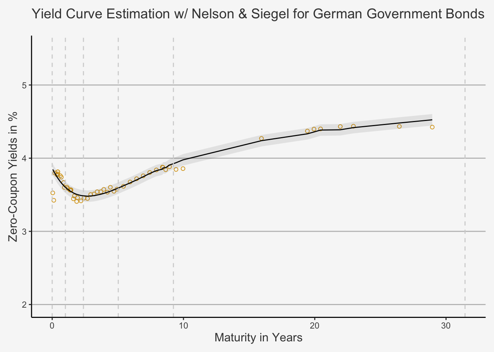
# Now, we can also plot the relationship
## First, the actual observations
actual_FI <- as.data.frame(x_sv$y$GERMANY)
colnames(actual_FI) <- c("Maturity", "Yield_Actual")
## Now the estimated ones
est_FI <-as.data.frame(x_sv$yhat$GERMANY)
colnames(est_FI) <- c("Maturity", "Yield_Estimated")
## Bind them together
est_act_FI <- left_join(actual_FI, est_FI, by = c("Maturity" = "Maturity"))
# Define the confidence interval surrounding the estimated yields
est_act_FI_final <- est_act_FI %>%
mutate(
Yield_Estimated = 100*Yield_Estimated,
Yield_Actual = 100*Yield_Actual,
std_yield = sd(Yield_Estimated),
n_obs = length(Yield_Estimated),
error = qnorm(0.975)*std_yield/sqrt(n_obs),
CI_up = Yield_Estimated + error,
CI_down = Yield_Estimated - error) %>%
select(Maturity, Yield_Estimated, Yield_Actual, CI_up, CI_down)
est_act_FI_final %>%
ggplot(aes(x = Maturity, y = Yield_Actual)) +
geom_point(color = "goldenrod", shape = 1) +
geom_line(aes(x = est_act_FI_final$Maturity, y = est_act_FI_final$Yield_Estimated)) +
geom_ribbon(aes(ymax = est_act_FI_final$CI_up, ymin = est_act_FI_final$CI_down), linetype = 2, alpha = 0.1) +
geom_vline(xintercept = x$knotpoints[[1]], linetype = "dashed", color = "lightgrey") +
ylim(2, 5.5) +
ggtitle("Yield Curve Estimation w/ Svenson Family for German Government Bonds") +
ylab("Zero-Coupon Yields in %") + xlab("Maturity in Years") +
scale_color_manual(name="Est. Variables", values=c("lightgrey", "dodgerblue4", "lightsteelblue3", "dodgerblue4", "violetred4")) +
scale_fill_manual(name="Actual Variables", values=c("lightgrey", "lightgrey", "lightsteelblue3", "dodgerblue4", "violetred4")) +
theme(plot.title= element_text(size=14, color="grey26",
hjust=0.1,
lineheight=1.2, margin=margin(0,15,15,15)), panel.background = element_rect(fill="#f7f7f7"),
panel.grid.major.y = element_line(size = 0.5, linetype = "solid", color = "grey"),
panel.grid.minor = element_blank(),
panel.grid.major.x = element_blank(),
plot.background = element_rect(fill="#f7f7f7", color = "#f7f7f7"), axis.title.x = element_text(color="grey26", size=12),
axis.title.y = element_text(color="grey26", size=12),
axis.line = element_line(color = "black")) +
theme(plot.margin = margin(0.3,0.3, 0.3,0.3, "cm")) ## Warning: Use of `est_act_FI_final$Maturity` is discouraged. Use `Maturity` instead.## Warning: Use of `est_act_FI_final$Yield_Estimated` is discouraged. Use `Yield_Estimated` instead.## Warning: Use of `est_act_FI_final$CI_up` is discouraged. Use `CI_up` instead.## Warning: Use of `est_act_FI_final$CI_down` is discouraged. Use `CI_down` instead.
It appears as if we were quite successful in estimating the yield curve with the approach proposed. Now, we may also want to have some summary statistics. The summary() method gives goodness of fit measures for the pricing and the yield errors, i.e., the root mean squared error (RMSE) and the average absolute error (AABSE).
For instance, for the nelson siegel:
# Optimal parameters
x_nss$opt_result$GERMANY$par## beta0 beta1 beta2 tau1
## 5.130481 -1.268739 -3.215557 2.689112# Get the RMSE
sqrt(sum((x_nss$p$GERMANY - x_nss$phat$GERMANY)^2))## [1] 2.557897and the svenson:
# Optimal parameters
x_sv$opt_result$GERMANY$par## beta0 beta1 beta2 tau1 beta3 tau2
## 0.0003164659 3.7590811501 -0.1316559404 2.8304424158 14.0896161653 15.2194654957# Get the RMSE
sqrt(sum((x_sv$p$GERMANY - x_sv$phat$GERMANY)^2))## [1] 1.534363As we can see, the Svenson approach is superior as it can account for more of the underlying variation and thus improve model performance.
Lastly, it may also be interesting to plot the pricing error per distinct bond:
# Do this solely for the svenson
df_sven <- as.data.frame(cbind(x_sv$perrors$GERMANY[,1], x_sv$perrors$GERMANY[,2]))
colnames(df_sven) <- c("Maturity", "Pricing Error")
df_sven %>%
ggplot(aes(x = Maturity, y = `Pricing Error`)) +
geom_point(color = "goldenrod", shape = 1) +
geom_line(aes(x = df_sven$Maturity, y = df_sven$`Pricing Error`), color = "lightsteelblue") +
geom_hline(yintercept = 0, linetype = "dashed", color = "lightgrey") +
ggtitle("Pricing Errors based on Maturity - Svenson Family") +
ylab("Zero-Coupon Yields in %") + xlab("Maturity in Years") +
ylim(-1,1) +
scale_color_manual(name="Est. Variables", values=c("lightgrey", "dodgerblue4", "lightsteelblue3", "dodgerblue4", "violetred4")) +
scale_fill_manual(name="Actual Variables", values=c("lightgrey", "lightgrey", "lightsteelblue3", "dodgerblue4", "violetred4")) +
theme(plot.title= element_text(size=14, color="grey26",
hjust=0.1,
lineheight=1.2, margin=margin(0,15,15,15)), panel.background = element_rect(fill="#f7f7f7"),
panel.grid.major.y = element_blank(),
panel.grid.minor = element_blank(),
panel.grid.major.x = element_blank(),
plot.background = element_rect(fill="#f7f7f7", color = "#f7f7f7"), axis.title.x = element_text(color="grey26", size=12),
axis.title.y = element_text(color="grey26", size=12),
axis.line = element_line(color = "black")) +
theme(plot.margin = margin(0.3,0.3, 0.3,0.3, "cm")) ## Warning: Use of `df_sven$Maturity` is discouraged. Use `Maturity` instead.## Warning: Use of `df_sven$`Pricing Error`` is discouraged. Use `Pricing Error` instead.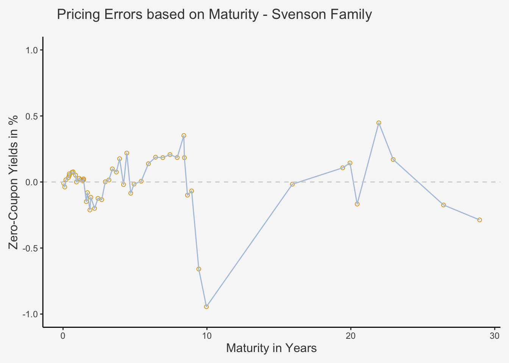
As we can see, the longer the maturity, the more precision is being lost with the approach. Perhaps this indicates that we should proceed to the nonparametric options.
5.4.4.3.2 Spline-based approach
We can also create a non-parametric approach in form of spline-based regressions to estimate the yield curve. Doing so, we follow one of either approaches:
First, the authors state that you need to preprocess the dataset in order to get the correct format
# Preprocess ot obtain long formats
prepro_D <- prepro_bond('GERMANY',mybonds)Based on this, we may now first define the number and optimal placement of knots. According to the authors, one approach is to use the rule of thumb of \(\sqrt{n}\) knots. We can show you how to find the optimal amount of knots according to Darcozi et al (2015) through application of the decomposed from the prepro_D object.
Especially, we need to distinguish whether the square root is larger or smaller than 3.
If < 3:
- identify the smallest number in the first column and the largest number from the last (ncol) column from the maturity matrix rounded to the largest integer just below the results
If > 3:
- the first and last knot points are defined as in previous case
- the others between those points are computed with some helper vectors with the length of s-3
# In order to define the optimal knot points, we create a small function:
FI_q_spline <- function(prepro_D){
# First, we need to define the list with maturities matrices as well as the list with the yield-to-maturity matrices
m <- prepro_D$m[[1]]
y <- prepro_D$y[[1]]
# Based on that, we now need to distinguish whether the resulting square root is less or larger than three. Depending on this, we need to use different functions.
n <- ncol(m)
s <- round(sqrt(n))
if(s < 3){
# if s < 3: Then, we just have the smallest first and largest last maturity which account for most of the variation
q <- c(floor(min(y[, 1])), max(m[, ncol(m)]))
}
else{
# if > 3: Then, we define the first and last knot point identically
i <- 2:(s-2) # sequence to define each knot point
h <- trunc(((i - 1) * n) / (s - 2)) # indices of maturity matrix used to search other knot points
# Further, we define for the remaining knots a weighting function theta which is proportional to the difference in length between the first and last knot
theta <- ((i - 1) * n) / (s - 2) - h # theta is used as a weight
# Now, we have the indices and weights (theta) of each sequecne. Based on this, we find the highest number in each h'th column of the maturity matrix and
# add the theta-weighted difference of the h+1 and h columns' maximum results.
highest_vola_cluster <- apply(as.matrix(m[, h]), 2, max) + theta * (apply(as.matrix(m[, h + 1]), 2, max) - apply(as.matrix(m[, h]), 2, max))
# Having identified the optimal knot points, we concatenate the values
q <- c(floor(min(y[, 1])), highest_vola_cluster, max(m[, ncol(m)]))
}
return(q)
}
FI_q_spline(prepro_D)## DE0001135101 DE0001141463 DE0001135218 DE0001135317
## 0.000000 1.006027 2.380274 5.033425 9.234521 31.446575Great, we were able to define the exact knots in the maturity. FYI, you can also do this with the following command:
x <- estim_cs(govbonds, 'GERMANY')
x$knotpoints[[1]]## DE0001135101 DE0001141463 DE0001135218 DE0001135317
## 0.000000 1.006027 2.380274 5.033425 9.234521 31.446575Based on this, we can now create the functional form of the spline. This is achieved using the following commands.
# Get Regression output
stargazer(x$regout, type = "text", digits = 7)##
## ===================================================
## Dependent variable:
## -------------------------------
## -Y[[k]]
## ---------------------------------------------------
## X[[k]]1 0.0193198
## (0.0152297)
##
## X[[k]]2 -0.0000849
## (0.0037926)
##
## X[[k]]3 -0.0003201
## (0.0011359)
##
## X[[k]]4 -0.0003710
## (0.0003907)
##
## X[[k]]5 0.0007292***
## (0.0000996)
##
## X[[k]]6 0.0020159***
## (0.0001302)
##
## X[[k]]7 -0.0416319***
## (0.0045903)
##
## ---------------------------------------------------
## Observations 52
## R2 0.9999834
## Adjusted R2 0.9999808
## Residual Std. Error 0.2134597 (df = 45)
## F Statistic 386,765.0000000*** (df = 7; 45)
## ===================================================
## Note: *p<0.1; **p<0.05; ***p<0.01# Get RMSE
sqrt(sum((x$p$GERMANY - x$phat$GERMANY)^2))## [1] 1.431931As we can see, this is thus far the most precise function. Let’s plot it:
# Now, we can also plot the relationship
## First, the actual observations
actual_FI <- as.data.frame(x$y$GERMANY)
colnames(actual_FI) <- c("Maturity", "Yield_Actual")
## Now the estimated ones
est_FI <-as.data.frame(x$yhat$GERMANY)
colnames(est_FI) <- c("Maturity", "Yield_Estimated")
## Bind them together
est_act_FI <- left_join(actual_FI, est_FI, by = c("Maturity" = "Maturity"))
# Define the confidence interval surrounding the estimated yields
est_act_FI_final <- est_act_FI %>%
mutate(
Yield_Estimated = 100*Yield_Estimated,
Yield_Actual = 100*Yield_Actual,
std_yield = sd(Yield_Estimated),
n_obs = length(Yield_Estimated),
error = qnorm(0.975)*std_yield/sqrt(n_obs),
CI_up = Yield_Estimated + error,
CI_down = Yield_Estimated - error) %>%
select(Maturity, Yield_Estimated, Yield_Actual, CI_up, CI_down)
est_act_FI_final %>%
ggplot(aes(x = Maturity, y = Yield_Actual)) +
geom_point(color = "goldenrod", shape = 1) +
geom_line(aes(x = est_act_FI_final$Maturity, y = est_act_FI_final$Yield_Estimated)) +
geom_ribbon(aes(ymax = est_act_FI_final$CI_up, ymin = est_act_FI_final$CI_down), linetype = 2, alpha = 0.1) +
geom_vline(xintercept = x$knotpoints[[1]], linetype = "dashed", color = "lightgrey") +
ylim(3, 5) +
ggtitle("Yield Curve Estimation w/ Regression Splines for German Government Bonds") +
ylab("Zero-Coupon Yields in %") + xlab("Maturity in Years") +
scale_color_manual(name="Est. Variables", values=c("lightgrey", "dodgerblue4", "lightsteelblue3", "dodgerblue4", "violetred4")) +
scale_fill_manual(name="Actual Variables", values=c("lightgrey", "lightgrey", "lightsteelblue3", "dodgerblue4", "violetred4")) +
theme(plot.title= element_text(size=14, color="grey26",
hjust=0.1,
lineheight=1.2, margin=margin(0,15,15,15)), panel.background = element_rect(fill="#f7f7f7"),
panel.grid.major.y = element_line(size = 0.5, linetype = "solid", color = "grey"),
panel.grid.minor = element_blank(),
panel.grid.major.x = element_blank(),
plot.background = element_rect(fill="#f7f7f7", color = "#f7f7f7"), axis.title.x = element_text(color="grey26", size=12),
axis.title.y = element_text(color="grey26", size=12),
axis.line = element_line(color = "black")) +
theme(plot.margin = margin(0.3,0.3, 0.3,0.3, "cm")) ## Warning: Use of `est_act_FI_final$Maturity` is discouraged. Use `Maturity` instead.## Warning: Use of `est_act_FI_final$Yield_Estimated` is discouraged. Use `Yield_Estimated` instead.## Warning: Use of `est_act_FI_final$CI_up` is discouraged. Use `CI_up` instead.## Warning: Use of `est_act_FI_final$CI_down` is discouraged. Use `CI_down` instead.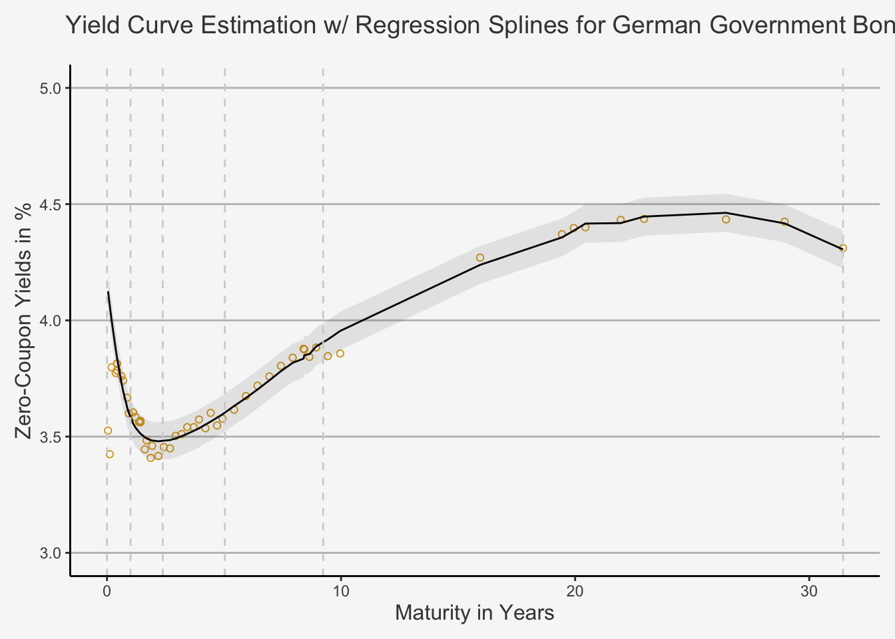
Great, we were able to depict the actual yield curve with the usual functional form of the cubic splines.
Let’s plot the error margins again:
# Do this solely for the svenson
df_cs <- as.data.frame(cbind(x$perrors$GERMANY[,1], x$perrors$GERMANY[,2]))
colnames(df_cs) <- c("Maturity", "Pricing Error")
df_cs %>%
ggplot(aes(x = Maturity, y = `Pricing Error`)) +
geom_point(color = "goldenrod", shape = 1) +
geom_line(aes(x = df_cs$Maturity, y = df_cs$`Pricing Error`), color = "lightsteelblue") +
geom_hline(yintercept = 0, linetype = "dashed", color = "lightgrey") +
ggtitle("Pricing Errors based on Maturity - Svenson Family") +
ylab("Zero-Coupon Yields in %") + xlab("Maturity in Years") +
ylim(-1,1) +
scale_color_manual(name="Est. Variables", values=c("lightgrey", "dodgerblue4", "lightsteelblue3", "dodgerblue4", "violetred4")) +
scale_fill_manual(name="Actual Variables", values=c("lightgrey", "lightgrey", "lightsteelblue3", "dodgerblue4", "violetred4")) +
theme(plot.title= element_text(size=14, color="grey26",
hjust=0.1,
lineheight=1.2, margin=margin(0,15,15,15)), panel.background = element_rect(fill="#f7f7f7"),
panel.grid.major.y = element_blank(),
panel.grid.minor = element_blank(),
panel.grid.major.x = element_blank(),
plot.background = element_rect(fill="#f7f7f7", color = "#f7f7f7"), axis.title.x = element_text(color="grey26", size=12),
axis.title.y = element_text(color="grey26", size=12),
axis.line = element_line(color = "black")) +
theme(plot.margin = margin(0.3,0.3, 0.3,0.3, "cm")) ## Warning: Use of `df_cs$Maturity` is discouraged. Use `Maturity` instead.## Warning: Use of `df_cs$`Pricing Error`` is discouraged. Use `Pricing Error` instead.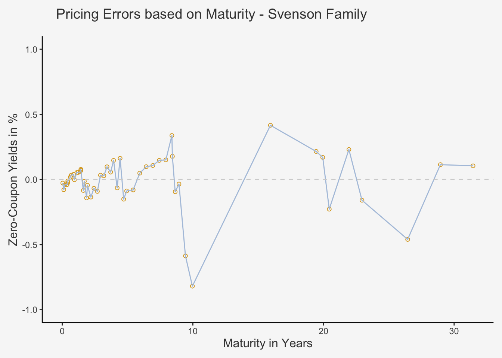
As we can see, the error margins have been reduced. This was to be expected, given the improved overall fit.
Lastly, we can also plot the actual regression output
# Get Regression output
stargazer(x$regout, type = "text", digits = 7)##
## ===================================================
## Dependent variable:
## -------------------------------
## -Y[[k]]
## ---------------------------------------------------
## X[[k]]1 0.0193198
## (0.0152297)
##
## X[[k]]2 -0.0000849
## (0.0037926)
##
## X[[k]]3 -0.0003201
## (0.0011359)
##
## X[[k]]4 -0.0003710
## (0.0003907)
##
## X[[k]]5 0.0007292***
## (0.0000996)
##
## X[[k]]6 0.0020159***
## (0.0001302)
##
## X[[k]]7 -0.0416319***
## (0.0045903)
##
## ---------------------------------------------------
## Observations 52
## R2 0.9999834
## Adjusted R2 0.9999808
## Residual Std. Error 0.2134597 (df = 45)
## F Statistic 386,765.0000000*** (df = 7; 45)
## ===================================================
## Note: *p<0.1; **p<0.05; ***p<0.01Further, we can plot the discount and forward curves from the x object using the following commands:
discount_df <- as.data.frame(cbind(x$discount$GERMANY[,1], x$discount$GERMANY[,2]))
colnames(discount_df) <- c("Maturity", "Discount_Factor")
fwd_rate_df <- as.data.frame(cbind(x$forward$GERMANY[,1], x$forward$GERMANY[,2]))
colnames(fwd_rate_df) <- c("Maturity", "Fwd_Rate")
disc_gg <- discount_df %>%
mutate(Discount_Factor = 100*Discount_Factor) %>%
ggplot(aes(x = Maturity, y = Discount_Factor)) +
geom_line(color = "lightsteelblue3") +
ggtitle("Discount Factor based on Maturity for German Government Bond") +
ylab("Discount Factor in %") + xlab("Maturity in Years") +
scale_color_manual(name="Est. Variables", values=c("lightgrey", "dodgerblue4", "lightsteelblue3", "dodgerblue4", "violetred4")) +
scale_fill_manual(name="Actual Variables", values=c("lightgrey", "lightgrey", "lightsteelblue3", "dodgerblue4", "violetred4")) +
theme(plot.title= element_text(size=14, color="grey26",
hjust=0.1,
lineheight=1.2, margin=margin(0,15,15,15)), panel.background = element_rect(fill="#f7f7f7"),
panel.grid.major.y = element_line(size = 0.5, linetype = "solid", color = "grey"),
panel.grid.minor = element_blank(),
panel.grid.major.x = element_blank(),
plot.background = element_rect(fill="#f7f7f7", color = "#f7f7f7"), axis.title.x = element_text(color="grey26", size=12),
axis.title.y = element_text(color="grey26", size=12),
axis.line = element_line(color = "black")) +
theme(plot.margin = margin(0.3,0.3, 0.3,0.3, "cm"))
disc_gg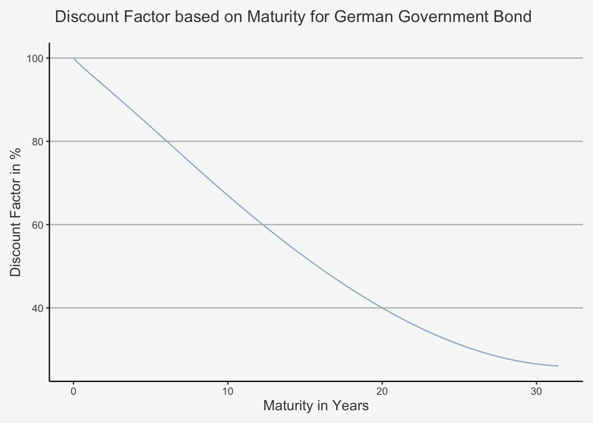
fwd_gg <- fwd_rate_df %>%
mutate(Discount_Factor = 100*Fwd_Rate) %>%
ggplot(aes(x = Maturity, y = Discount_Factor)) +
geom_line(color = "darkgreen") +
ggtitle("Discount Factor based on Maturity for German Government Bond") +
ylab("Forward Rate in %") + xlab("Maturity in Years") +
scale_color_manual(name="Est. Variables", values=c("lightgrey", "dodgerblue4", "lightsteelblue3", "dodgerblue4", "violetred4")) +
scale_fill_manual(name="Actual Variables", values=c("lightgrey", "lightgrey", "lightsteelblue3", "dodgerblue4", "violetred4")) +
theme(plot.title= element_text(size=14, color="grey26",
hjust=0.1,
lineheight=1.2, margin=margin(0,15,15,15)), panel.background = element_rect(fill="#f7f7f7"),
panel.grid.major.y = element_line(size = 0.5, linetype = "solid", color = "grey"),
panel.grid.minor = element_blank(),
panel.grid.major.x = element_blank(),
plot.background = element_rect(fill="#f7f7f7", color = "#f7f7f7"), axis.title.x = element_text(color="grey26", size=12),
axis.title.y = element_text(color="grey26", size=12),
axis.line = element_line(color = "black")) +
theme(plot.margin = margin(0.3,0.3, 0.3,0.3, "cm"))
fwd_gg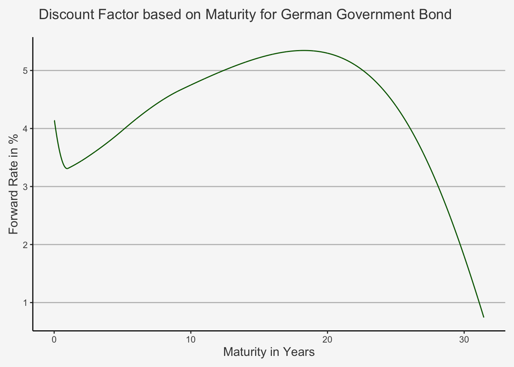
Thus, we can conclude that the non-parametric approach delivers the best results and also provides logical forward as well as discount rates. Consequently, we can use this approach for the estimation of the term structure.
Great. We now have encountered the most wide-spread functions to estimate term structures. We showed how to create datasets that fit the functional model well, how to check for the error distribution, which variables to consider when choosing starting parameters and how to plot both the yield curve, spot rate and discount rate curve as well as how to measure the goodness of fit for yield curves.
5.4.5 Sensitivity of the Price to Yield: Duration and Convexity
As we mentioned, bond prices have roughly three underlying forms of risk. While the first two can be handled by bond selection itself (at least this is the assumption thus far), market risk is something that can be considered a calculatable risk as we can derive formulas which proxy said risk. In general, market risk arises from the changes in interest rates (= the yield (YTM)), which causes reinvestment risk and liquidation risk. The market price impact on a bond due to a change in interest rates is measured by examining the price of a bond as a function of its YTM. Fixed income instruments are sensitive to changes in interest rates. As such, managing interest rate risk is an important consideration when dealing with fixed income portfolios. Duration and convexity are two techniques that help investors immunize against small changes in interest rates. The idea behind duration is that it estimates the impact of small changes in interest rates on the value of the fixed income instrument, and the idea behind convexity is to enhance this estimate by also considering the impact of the rate of the change in interest rates.
From basic calculus we understand outcome that the change of an underlying w.r.t. a given variable in a function can be obtained by taking the derivative of said function w.r.t. said variable. As such, if we do so, we obtain the percentage change of the bond price caused by a \(\triangle y\) change in its yield. This is also known as Macaulay Duration. We derive the duration as first order approximation for small changes in the underlying characteristic.
The Macaulay duration can be interpreted as the weighted-average time to maturity of the bond. It is given as:
\[ MacD = \sum_{i=0}^Tt_t\frac{CF_t/(1+y)^i}{P} \]
whereas \(t_t\) is the Cash-Flow period, \(CF_t\) is the present value of the period t cash flows, discounted to obtain the PV, and Price is the price of the bond and P is the market price of the bond.
Modified duration adjusts Macaulay duration by considering the yield of the bond. Note that the formula just gives the change in relation to the given yield change. As such, we just take the change of the bond price w.r.t. changes in yield relative to a one unit change in the yield. In essence, it gives the price sensitivity of the bond measured as the percentage change in price for a given change in the yield. It is calculated as:
\[ ModD = \frac{MacD}{1+y_T/k} \]
Consequently, it provides the sensitivity relative to the change in yield. This pricing formula marks clearly the inverse relationship of price and yield. Since the duration relates the change in YTM to the associated change in its price (and thus serves as a proxy for price movements), it is a clear measure of the bond’s interest rate risk.
Building on this, the convexity is just the second order approximation of the relation of bond prices and its underlying yield. That is, it is the second derivative w.r.t. y or the quadratic approximation of the underlying function. Consequently, the function is given as:
\[ Convexity = \frac{1}{P}\frac{1}{(1+y)^2}\sum_{i=0}^T \frac{CF_t(t^2+t)}{(1+y)^i} \]
Let’s now dig a little bit deeper and calculate both duration and convexity for a fictional example. Doing so, we will also calculate the value of the bond. We say that we have:
- C = 50.75
- Ti = 10
- r = 0.01391
- N = 1000
- k = 4
# Create a data frame
mv = market_value(11, 0.0575, 0.01391, 1000, 2)
mv## [1] 1443.184As such, we obtain a bond value of 1443.184. In order to now calculate both duration and convexity, we first create a manual approach:
Ti = 11
C = 0.0575
r = 0.01391
N = 1000
k = 2
# Create the manual CFs
period <- seq(1, k*Ti, 1)
cf <- c(rep(C/k, k*Ti-1), C/k+N)
cf_PV <- cf/ ((1 + r / k)^(-period))
# Calculate the duration
dur <- period * cf_PV/mv
# Calculate MacD:
MacD <- sum(dur/k)
# Calculate ModD:
ModD <- MacD/(1+r/k)
ModD## [1] 8.818999To calculate the convexity now, we construct the variables c1 and c2, where:
- c1 = \((t^2 + t)CF\)
- c2 = \(P(1+r/k)^2\)
Then, we calculate the period convexity adjustment as:
- Conv = \(c1\times PV-Adj / c2\)
# Calculate the convexity
c1 = (period^2 + period)*cf
c2 = mv*(1 + r / k)^2
conv = c1 * 1/((1 + r / k)^(-period)) / c2
convexity = sum(conv)
convexity## [1] 402.8344We can now estimate the bond prices based on both the duration as well as the convexity. This is done using the following formulas. For the Duration we get:
\[ \triangle P = -D \times \triangle y \times P \]
whereas the change in bond price is a function of the modified duration (which quantifies the impact of small changes in interest rates on the value of the fixed income instrument), the change in yield and the current bond price. This is intuitive as we obtain that the change in price depends on the change in yield as well as the duration, which measures the sensitivity related to the yield. Let’s now assume we increase the yield by 100 BP
delta_y <- 0.01
delta_P <- -ModD*delta_y*mv
P_new <- delta_P + mv
P_new## [1] 1315.909We can also estimate the price changes using convexity. This is given by the formula:
\[ \triangle P = P\times [(-D \times \triangle y) + 0.5 \times C \times (\triangle y)^2] \]
where C is the Convexity and the other terms are the same as defined above for duration.
delta_P_C <- mv*((-ModD*delta_y) + 0.5*convexity*delta_y^2)
P_new_C <- delta_P_C + mv
P_new_C## [1] 1344.977We can now finally compare the results of the estimated bond prices and actual bond prices. For that, we just add the yield change into the formula above.
market_value(11, 0.0575, 0.01391 + delta_y, 1000, 2)## [1] 1323.208The full valuation estimates the bond price is 1323, which is in between our estimated price change based on duration only and duration plus convexity.
Since we now understand how the duration and convexity work, we can start to create functions based on them:
# Get the standard pricing
Ti = 11
C = 0.0575
r = 0.01391
N = 1000
k = 2
delta_y = 0.01
# Create a duration and convexity function
duration_convexity <- function(Ti, C, r, N, k, mv, delta_y, convex_opt = F, price_change = F){
# Baselines
period <- seq(1, k*Ti, 1)
cf <- c(rep(C/k, k*Ti -1), C/k+N)
cf_PV <- cf/ ((1 + r / k)^(-period))
# Durations
dur <- period*cf_PV/mv
MacD <- sum(dur/k)
ModD <- MacD/(1+r/k)
# Convexity
c1 = (period^2+period)*cf
c2 = mv*(1+r/k)^2
conv = c1*1/((1 + r / k)^(-period)) / c2
convexity = sum(conv)
# Calculate the price changes
Price_Dur <- -ModD*delta_y*mv + mv
Price_Conv <- mv*((-ModD*delta_y) + 0.5*convexity*delta_y^2) + mv
# If statement
if(convex_opt == F & price_change == F){
return(ModD)
}
else if (convex_opt == T & price_change == F){
return(convexity)
}
else if (convex_opt == F & price_change == T){
return(Price_Dur)
}
else{
return(Price_Conv)
}
}duration_convexity(Ti, C, r, N, k, mv, delta_y, convex_opt = F, price_change = F)## [1] 8.818999duration_convexity(Ti, C, r, N, k, mv, delta_y, convex_opt = T, price_change = F)## [1] 402.8344Now, we can again calculate both estimations
duration_convexity(Ti, C, r, N, k, mv, delta_y, convex_opt = F, price_change = T)## [1] 1315.909duration_convexity(Ti, C, r, N, k, mv, delta_y, convex_opt = T, price_change = T)## [1] 1344.977As we can see, both options deliver the identical result.
5.4.6 Price and Yield: Full Valuation and Approximations
We now have figured out ways to compute the exact as well as the approximate functions to estimate the Bond Price based on the yield and other functions. In order to understand how duration and convexity stack up compared to a full valuation of the bond at different yields.
# Get the standard pricing
Ti = 11
C = 0.0575
r = 0.01391
N = 1000
k = 2
delta_y = 0.01
delta_y <- seq(-0.06391, 0.05391, 0.001)
full_change <- rep(0,length(delta_y))
mod_D_change <- rep(0,length(delta_y))
conv_change <- rep(0,length(delta_y))
for(i in 1:length(delta_y)){
full_change[i] <- market_value(Ti, C, r + delta_y[i], N, k)
mod_D_change <- duration_convexity(Ti, C, r, N, k, mv, delta_y, convex_opt = F, price_change = T)
conv_change <- duration_convexity(Ti, C, r, N, k, mv, delta_y, convex_opt = T, price_change = T)
}
df_yields <- as.data.frame(cbind(r+delta_y, full_change, mod_D_change, conv_change))
colnames(df_yields) <- c("Yield", "Full Valuation Est", "Duration Est", "Dur + Convexity Est")
df_yields %>% gather(Treasury, Return, `Full Valuation Est`: `Dur + Convexity Est`) %>%
ggplot(aes(x=Yield, y = Return, color = Treasury)) + geom_line() +
ggtitle("Bond Yield Estimate w.r.t Yield - Actual, Duration and Convexity Estimates") +
ylab("Value") + xlab("Yield") +
scale_fill_manual(values=c("goldenrod", "lightsteelblue3", "dodgerblue4", "violetred4")) +
scale_color_manual(values=c("violetred4", "khaki3", "lightsteelblue3", "dodgerblue4", "violetred4")) +
theme(plot.title= element_text(size=14, color="grey26",
hjust=0.1,
lineheight=1.2), panel.background = element_rect(fill="#f7f7f7"),
panel.grid.major.y = element_line(size = 0.5, linetype = "solid", color = "grey"),
panel.grid.minor = element_blank(),
panel.grid.major.x = element_blank(),
plot.background = element_rect(fill="#f7f7f7", color = "#f7f7f7"), axis.title.x = element_text(color="grey26", size=12),
axis.title.y = element_text(color="grey26", size=12),
axis.line = element_line(color = "black")) + labs(fill='Swiss Government Bonds') + labs(color='Difference in Yield')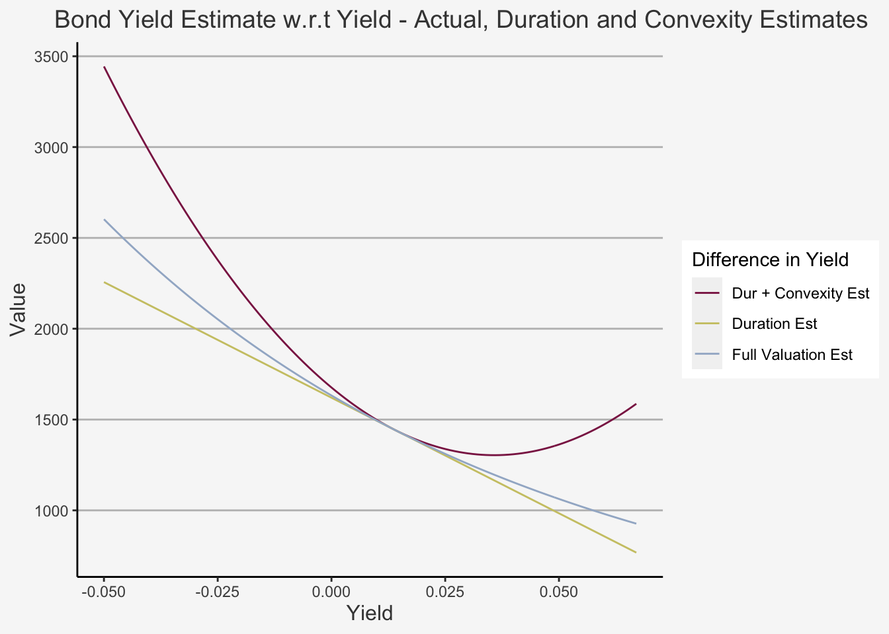
Great, we now have written functions to calculate the bond price based on the parameters of interest and were able to calculate the bond price estimates based on the three most common functions. Based on them, we were able to draw an approximation of bond returns.
5.5 Interest Rate Derivative Models
Lastly, we can look at financial products whose payoff and subsequent payoff depends on interest rates. These are also called Interest Rate derivative models. The basic products include interest rate swaps, forward rate agreements, callable and puttable bonds or bond options (such as CBs, which we discover in the next part).
In order to do so, we will look at four distinct models to price interest rate derivatives. We have already encountered models which aim at capturing term structures of interest rates, and the main ideas of these models can be transferred to the case of interest rate derivative pricing.
5.5.1 Black Model
The Black model (Black, 1976) was developed to price options on futures contracts. Futures options grant the holder the right to enter into a contract at a predetermined price (denoted as strike price or exercise price, X) on a specified date (maturity, T). In this model, we keep the assumptions of the Black-Scholes model, except that the underlying is the futures price instead of the spot price. Hence, we assume that the futures price (F) follows a geometric Brownian motion:
\[ dF = \mu Fdt + \sigma FdW \]
Black’s formula for a European futures call option is as follows:
\[ c = e^{-rT}[FN(d_1) - XN(d_2)] \]
whereas:
\[ \begin{align} d_1 &= \frac{ln(F/X) + \frac{\sigma^2}{2}T}{\sigma\sqrt{T}}\\ d_2 &= \frac{ln(F/X) - \frac{\sigma^2}{2}T}{\sigma\sqrt{T}} \end{align} \]
Based on this, we can also define the price of a put option as:
\[ p = e^{-rT}[XN(-d_2) - FN(-d_1)] \]
In order to price an interest rate derivative with the Black model, we can simply use the fOptions package and its function called GBSOption, which is just the usual Black Scholes formula for the option pricing process.
# Let's quickly look at the function
install.packages("fOptions")##
## The downloaded binary packages are in
## /var/folders/97/v7mhh7_10r54n7qdx4ykd6wc0000gn/T//RtmpSFmz9w/downloaded_packageslibrary(fOptions)
GBSOption## function (TypeFlag = c("c", "p"), S, X, Time, r, b, sigma, title = NULL,
## description = NULL)
## {
## TypeFlag = TypeFlag[1]
## d1 = (log(S/X) + (b + sigma * sigma/2) * Time)/(sigma * sqrt(Time))
## d2 = d1 - sigma * sqrt(Time)
## if (TypeFlag == "c")
## result = S * exp((b - r) * Time) * CND(d1) - X * exp(-r *
## Time) * CND(d2)
## if (TypeFlag == "p")
## result = X * exp(-r * Time) * CND(-d2) - S * exp((b -
## r) * Time) * CND(-d1)
## param = list()
## param$TypeFlag = TypeFlag
## param$S = S
## param$X = X
## param$Time = Time
## param$r = r
## param$b = b
## param$sigma = sigma
## if (is.null(title))
## title = "Black Scholes Option Valuation"
## if (is.null(description))
## description = as.character(date())
## new("fOPTION", call = match.call(), parameters = param, price = result,
## title = title, description = description)
## }
## <bytecode: 0x7f7e6cee3630>
## <environment: namespace:fOptions>As we can see, when we want to compute \(d_1\) for the European call, then we can see the importance of the parameter b in the calculation. This factor is how we can decide which model we want to use. In essence, these options are ready for b:
- b = r: BS Options Model
- b = r-q: Merton’s stock option model with continuous dividend yield q (= currency option model)
- b = 0: Black’s futures option model
That’s all there is to state. We can now just take a fictional example. Let’s say we want to calculat a call with strike 120, current price 100, 5 years maturity, 5% interest, b equal to zero and sigma of 0.2
GBSOption("c", 120, 100, 5, 0.05, 0, 0.2)##
## Title:
## Black Scholes Option Valuation
##
## Call:
## GBSOption(TypeFlag = "c", S = 120, X = 100, Time = 5, r = 0.05,
## b = 0, sigma = 0.2)
##
## Parameters:
## Value:
## TypeFlag c
## S 120
## X 100
## Time 5
## r 0.05
## b 0
## sigma 0.2
##
## Option Price:
## 24.16356
##
## Description:
## Thu Feb 24 17:52:02 2022Consequently, we can see that the option price is approximately 24.
5.5.2 Pricing Interest Rate Caps with Black
Rate caps are interest rate derivatives in which the holder (buyer) gets payments over a certain period of time if the interest rate exceeds a given threshold. Conversely, floors are options in which the buyer gets payments if the interest rate is below a given threshold. As such, caps and floors are efficient products to hedge against interest rate volatility. The payoff of a cap (with one unit of notional amount) at the end of the nth period is as follows:
\[ \tau\max(L_{n-1}-X,0) \]
whereas \(\tau\) defines the interval between two maturity dates. This is also referred to as a caplet, whereas X is an underlying. Apparently, the payoff will either be 0 (in case that the interest rate strike X is higher than the interest rate observed) or \(L_{n-1}-X\) (in case that X is smaller than the interest rate). If we assume that the derivative follows a LIBOR curve, and that the LIBOR is given as a random variable that has lognormal distribution and the volatility is \(\sigma_{n-1}\), then we can apply the formulas:
\[ c_n = \tau_ne^{-r\tau n}[F_{n-1}N(d_1) - XN(d_2)] \]
whereas:
\[ \begin{align} d_1 &= \frac{ln(F_{n-1}/X) + \frac{\sigma^2_{n-1}}{2}\tau(n-1)}{\sigma_{n-1}\sqrt{\tau(n-1)}}\\ d_2 &= \frac{ln(F_{n-1}/X) - \frac{\sigma^2_{n-1}}{2}\tau(n-1)}{\sigma_{n-1}\sqrt{\tau(n-1)}} \end{align} \]
here, \(F_{n-1}\) is the forward LIBOR rate between \(\tau(n-1)\) and \(\tau n\), and r is the risk-free spot log return with maturity \(\tau n\). This is nothing else than our usual Black / Scholes formula, accounting for a maturity period and given the remaining DOF.
Once we have valued a caplet, we can continue this for each of the maturities. We then need to sum their prices and aggregate them to obtain the overall price of the interest rate cap.
Let’s see an example to understand this in depth. We have to pay USD LIBOR for 6 months to a business partner between May 2014 and November 2014. A caplet is an easy way to avoid the interest rate risk. Assume that we have a caplet on the LIBOR rate with 2.5% strike price (using the usual terminology). This means that if the LIBOR rate is higher then 2.5%, we will receive the difference in cash. If, for example, the LIBOR rate turns out to be 3% in May, our payoff on one unit of notional amount is 0.5*max(3% -2.5%, 0). Assuming that the LIBOR rate follows the geometric Brownian motion with 20% volatility, the forward rate between May 1st and November 1st is 2.2%, and the spot rate is 2%. In this case, we have that:
- X = 0.025
- F = 0.022
- \(\tau\) = 0.5
- \(\sigma\) = 0.2
- r = 0.02
Now, let’s see how to price the caplet. There is nothing new in it; we can simply use the Black-Scholes formula. It is clear that we need to set \(S = F_{n-1}\), Time = 0.5, and b = 0.
GBSOption("c", 0.022, 0.025, 0.5, 0.02, 0, 0.2)##
## Title:
## Black Scholes Option Valuation
##
## Call:
## GBSOption(TypeFlag = "c", S = 0.022, X = 0.025, Time = 0.5, r = 0.02,
## b = 0, sigma = 0.2)
##
## Parameters:
## Value:
## TypeFlag c
## S 0.022
## X 0.025
## Time 0.5
## r 0.02
## b 0
## sigma 0.2
##
## Option Price:
## 0.0003269133
##
## Description:
## Thu Feb 24 17:52:02 2022The price of the option is 0.0003269133. We still need to multiply it with τ = 0.5, which makes it 0.0001634567.
A cap is simply a sum of caplets, but we can combine them with different parameters if needed. Let’s say we need a cap that pays if the LIBOR rate goes above 2.5% in the first 3 months, or if it is higher than 2% in the following 3 months. The forward LIBOR rate can also be different in the May and August period (let’s say it is 2.1%), and in the August and November period (let’s say it is 2.2%). We simply price both caplets one by one and add their prices:
GBSOption("c", 0.021, 0.025, 0.25, 0.02, 0, 0.2)##
## Title:
## Black Scholes Option Valuation
##
## Call:
## GBSOption(TypeFlag = "c", S = 0.021, X = 0.025, Time = 0.25,
## r = 0.02, b = 0, sigma = 0.2)
##
## Parameters:
## Value:
## TypeFlag c
## S 0.021
## X 0.025
## Time 0.25
## r 0.02
## b 0
## sigma 0.2
##
## Option Price:
## 3.743394e-05
##
## Description:
## Thu Feb 24 17:52:02 2022GBSOption("c", 0.022, 0.02, 0.25, 0.02, 0, 0.2)##
## Title:
## Black Scholes Option Valuation
##
## Call:
## GBSOption(TypeFlag = "c", S = 0.022, X = 0.02, Time = 0.25, r = 0.02,
## b = 0, sigma = 0.2)
##
## Parameters:
## Value:
## TypeFlag c
## S 0.022
## X 0.02
## Time 0.25
## r 0.02
## b 0
## sigma 0.2
##
## Option Price:
## 0.002179862
##
## Description:
## Thu Feb 24 17:52:02 2022Now, we need to multiply both with τ = 0.25 and take the sum of their prices:
(3.743394e-05 + 0.002179862 ) * 0.25## [1] 0.000554324Pricing a floor is very similar. First, we divide the asset’s cash flows into single payments, called floorlets. Then, we determine the value of each floorlet with the help of the Black model; the only difference is that floorlets are not call but put options. Finally, we add up the prices of the floorlets to get the value of the floor.
As such, this is a simple model to compute caps and floors for forward rate interest agreements.
5.6 Short Rate Models
Black’s model is applicable when we can assume that the future value of the underlying asset has lognormal distribution. Another approach to value interest rate derivatives is by modeling the term structure of interest rates. Here, we continue by presenting two basic interest rate models and their main characteristics. Two of the most common short rate models are the Vasicek and Cox, Ingersoll, and Ross (CIR) models. These models generate a term structure of zero coupon prices. Both of these models assume a risk-neutral process for the short rate r with one source of uncertainty. Specifically,
- the drift and volatility parameters depend only on the short rate r and not on time.
Another common feature of these two models is that they exhibit mean reversion of the short rate. The difference between the two models is in how they handle volatility.
5.6.1 Vasicek
5.6.1.1 Relation of interest rate parameters
The Vasicek model for changes in the short interest rate r is stochastic and of the following form:
\[ dr = a(b-r)dt + \sigma_rdz \]
where a very small change in the short rate (dr) in the time increment dt is pulled back to the mean level b at a rate of a. The second term is the volatility of the short rate and it involves uncertainty dz. dz is a normally distributed variable with zero mean and variance dt. We assume that the short rate r is the instantaneous rate at time t appropriate for continuous compounding.
Based on this, we can create simulation studies which portray the relationship between the interest rate increment and its underlying functional parameters.
# Create the vasicek function
vasicek <- function(alpha, beta, sigma, n = 1000, r0 = 0.05){
v <- rep(0, n)
v[1] <- r0
for (i in 2:n){
v[i] <- v[i - 1] + alpha * (beta - v[i - 1]) + sigma * rnorm(1)
}
return(v)
}
# Create the data frame
r <- replicate(4, vasicek(0.05, 0.065, 0.0003))
r_df <- as.data.frame(cbind(r, seq(ymd('2002-04-07'),ymd('2015-03-01'), by = as.difftime(weeks(1)))))## Warning in base::cbind(...): number of rows of result is not a multiple of vector length (arg 2)colnames(r_df) <- c("Sim1", "Sim2", "Sim3", "Sim4", "Time")
r_df <- r_df %>% mutate(Time = as.Date(Time))
r_df <- r_df[!duplicated(r_df[c('Time')]),]
# Plot the plot
r_df %>%
ggplot(aes(x = Time, y = Sim1), color = "Sim1") + geom_line() +
geom_line(aes(x = r_df$Time, y = r_df$Sim2, color = "Sim2")) +
geom_line(aes(r_df$Time, r_df$Sim3, color = "Sim3")) +
geom_line(aes(r_df$Time, r_df$Sim4, color = "Sim4")) +
ggtitle("Vasicek Model estimation of the interest rate") +
ylab("Value") + xlab("Time") +
scale_fill_manual(values=c("goldenrod", "lightsteelblue3", "dodgerblue4", "violetred4")) +
scale_color_manual(values=c("violetred4", "khaki3", "lightsteelblue3", "dodgerblue4", "violetred4")) +
theme(plot.title= element_text(size=14, color="grey26",
hjust=0.1,
lineheight=1.2), panel.background = element_rect(fill="#f7f7f7"),
panel.grid.major.y = element_line(size = 0.5, linetype = "solid", color = "grey"),
panel.grid.minor = element_blank(),
panel.grid.major.x = element_blank(),
plot.background = element_rect(fill="#f7f7f7", color = "#f7f7f7"), axis.title.x = element_text(color="grey26", size=12),
axis.title.y = element_text(color="grey26", size=12),
axis.line = element_line(color = "black")) ## Warning: Use of `r_df$Time` is discouraged. Use `Time` instead.## Warning: Use of `r_df$Sim2` is discouraged. Use `Sim2` instead.## Warning: Use of `r_df$Time` is discouraged. Use `Time` instead.## Warning: Use of `r_df$Sim3` is discouraged. Use `Sim3` instead.## Warning: Use of `r_df$Time` is discouraged. Use `Time` instead.## Warning: Use of `r_df$Sim4` is discouraged. Use `Sim4` instead.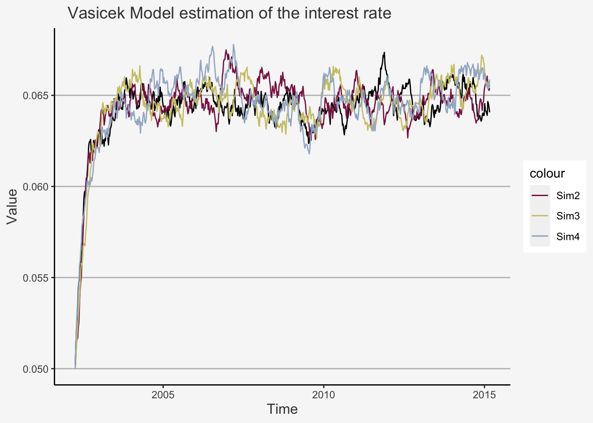
This is the general formula for the interest rate model according to Vasicek. We can now take a step ahead and look at its sensitivity towards its individual parameters.
5.6.1.1.1 Sensitivity towards volatility
# Sensivity towards volatility
r <- sapply(c(0, 0.0002, 0.0004), function(sigma){vasicek(0.02, 0.065, sigma)})
r_df_vola <- as.data.frame(cbind(r, seq(ymd('2002-04-07'),ymd('2015-03-01'), by = as.difftime(weeks(1)))))## Warning in base::cbind(...): number of rows of result is not a multiple of vector length (arg 2)colnames(r_df_vola) <- c("Vola1", "Vola2", "Vola3", "Time")
r_df_vola <- r_df_vola %>% mutate(Time = as.Date(Time))
r_df_vola <- r_df_vola[!duplicated(r_df_vola[c('Time')]),]
# Plot the plot
r_df_vola %>%
ggplot(aes(x = Time, y = Vola1, color = "Vola1")) + geom_line() +
geom_line(aes(x = r_df_vola$Time, y = r_df_vola$Vola2, color = "Vola2")) +
geom_line(aes(r_df_vola$Time, r_df_vola$Vola3, color = "Vola3")) +
ggtitle("Vasicek Model estimation of the interest rate - dependence on volatility") +
ylab("Value") + xlab("Yield") +
scale_fill_manual(values=c("goldenrod", "lightsteelblue3", "dodgerblue4", "violetred4")) +
scale_color_manual(values=c("violetred4", "khaki3", "lightsteelblue3", "dodgerblue4", "violetred4")) +
theme(plot.title= element_text(size=14, color="grey26",
hjust=0.1,
lineheight=1.2), panel.background = element_rect(fill="#f7f7f7"),
panel.grid.major.y = element_line(size = 0.5, linetype = "solid", color = "grey"),
panel.grid.minor = element_blank(),
panel.grid.major.x = element_blank(),
plot.background = element_rect(fill="#f7f7f7", color = "#f7f7f7"), axis.title.x = element_text(color="grey26", size=12),
axis.title.y = element_text(color="grey26", size=12),
axis.line = element_line(color = "black")) ## Warning: Use of `r_df_vola$Time` is discouraged. Use `Time` instead.## Warning: Use of `r_df_vola$Vola2` is discouraged. Use `Vola2` instead.## Warning: Use of `r_df_vola$Time` is discouraged. Use `Time` instead.## Warning: Use of `r_df_vola$Vola3` is discouraged. Use `Vola3` instead.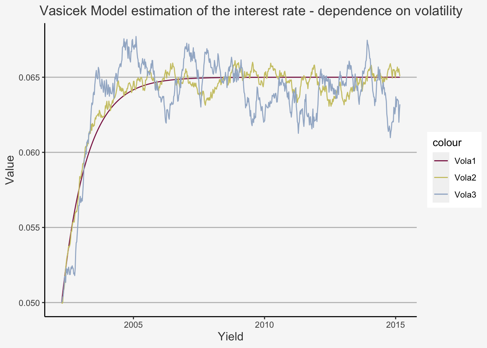
As we can see, an increasing volatility creates larger spikes and valleys. This is to be expected, given that the term is additive. As such, the higher the volatility, the more it will circle around its long-term average, which is 0.065. If the volatility parameter is set to zero, the additive term falls out of the equation. Since r0 is lower than beta and alpha > 0, we will see that the Value of the short rate will always converge to the beta value since, once that r0 = beta, the first term of the equation is also equal to zero. Then we have an addition of two zero terms and the previous r0 term, which is equal to beta. Hence, with volatility set to zero, the Vasicek model will always converge to the beta as long-term average.
5.6.1.1.2 Sensitivity towards alpha
We can do the same for differernt alphas
# Sensivity towards alpha
r <- sapply(c(0.002, 0.02, 0.2), function(alpha){set.seed(2014); vasicek(alpha, 0.065, 0.0002)})
r_df_alpha <- as.data.frame(cbind(r, seq(ymd('2002-04-07'),ymd('2015-03-01'), by = as.difftime(weeks(1)))))## Warning in base::cbind(...): number of rows of result is not a multiple of vector length (arg 2)colnames(r_df_alpha) <- c("Alpha1", "Alpha2", "Alpha3", "Time")
r_df_alpha <- r_df_alpha %>% mutate(Time = as.Date(Time))
r_df_alpha <- r_df_alpha[!duplicated(r_df_alpha[c('Time')]),]
# Plot the plot
r_df_alpha %>%
ggplot(aes(x = Time, y = Alpha1, color = "Alpha1")) + geom_line() +
geom_line(aes(x = r_df_alpha$Time, y = r_df_alpha$Alpha2, color = "Alpha2")) +
geom_line(aes(r_df_alpha$Time, r_df_alpha$Alpha3, color = "Alpha3")) +
ggtitle("Vasicek Model estimation of the interest rate - dependence on alphas") +
ylab("Value") + xlab("Yield") +
scale_fill_manual(values=c("goldenrod", "lightsteelblue3", "dodgerblue4", "violetred4")) +
scale_color_manual(values=c("violetred4", "khaki3", "lightsteelblue3", "dodgerblue4", "violetred4")) +
theme(plot.title= element_text(size=14, color="grey26",
hjust=0.1,
lineheight=1.2), panel.background = element_rect(fill="#f7f7f7"),
panel.grid.major.y = element_line(size = 0.5, linetype = "solid", color = "grey"),
panel.grid.minor = element_blank(),
panel.grid.major.x = element_blank(),
plot.background = element_rect(fill="#f7f7f7", color = "#f7f7f7"), axis.title.x = element_text(color="grey26", size=12),
axis.title.y = element_text(color="grey26", size=12),
axis.line = element_line(color = "black")) ## Warning: Use of `r_df_alpha$Time` is discouraged. Use `Time` instead.## Warning: Use of `r_df_alpha$Alpha2` is discouraged. Use `Alpha2` instead.## Warning: Use of `r_df_alpha$Time` is discouraged. Use `Time` instead.## Warning: Use of `r_df_alpha$Alpha3` is discouraged. Use `Alpha3` instead.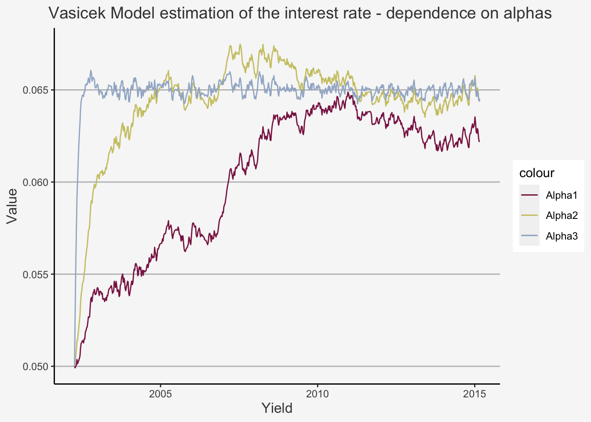
As one can observe, an increase in alpha is associated with a quicker convergence towards the long-term average. The higher alpha, the quicker the convergence. This is also intuitive, given that alpha is the multiplicative term of the difference between beta and r. If this is positive, then a larger alpha implies a steeper increase (= stronger first derivative).
5.6.1.1.3 Sensitivity towards beta
Lastly, let’s look at the beta value.
# Sensivity towards alpha
r <- sapply(c(0.055, 0.065, 0.095), function(beta){set.seed(2014); vasicek(0.02, beta, 0.0002)})
r_df_beta <- as.data.frame(cbind(r, seq(ymd('2002-04-07'),ymd('2015-03-01'), by = as.difftime(weeks(1)))))## Warning in base::cbind(...): number of rows of result is not a multiple of vector length (arg 2)colnames(r_df_beta) <- c("Beta1", "Beta2", "Beta3", "Time")
r_df_beta <- r_df_beta %>% mutate(Time = as.Date(Time))
r_df_beta <- r_df_beta[!duplicated(r_df_beta[c('Time')]),]
# Plot the plot
r_df_beta %>%
ggplot(aes(x = Time, y = Beta1, color = "Beta1")) + geom_line() +
geom_line(aes(x = r_df_beta$Time, y = r_df_beta$Beta2, color = "Beta2")) +
geom_line(aes(r_df_beta$Time, r_df_beta$Beta3, color = "Beta3")) +
ggtitle("Vasicek Model estimation of the interest rate - dependence on betas") +
ylab("Value") + xlab("Time") +
scale_fill_manual(values=c("goldenrod", "lightsteelblue3", "dodgerblue4", "violetred4")) +
scale_color_manual(values=c("violetred4", "khaki3", "lightsteelblue3", "dodgerblue4", "violetred4")) +
theme(plot.title= element_text(size=14, color="grey26",
hjust=0.1,
lineheight=1.2), panel.background = element_rect(fill="#f7f7f7"),
panel.grid.major.y = element_line(size = 0.5, linetype = "solid", color = "grey"),
panel.grid.minor = element_blank(),
panel.grid.major.x = element_blank(),
plot.background = element_rect(fill="#f7f7f7", color = "#f7f7f7"), axis.title.x = element_text(color="grey26", size=12),
axis.title.y = element_text(color="grey26", size=12),
axis.line = element_line(color = "black")) ## Warning: Use of `r_df_beta$Time` is discouraged. Use `Time` instead.## Warning: Use of `r_df_beta$Beta2` is discouraged. Use `Beta2` instead.## Warning: Use of `r_df_beta$Time` is discouraged. Use `Time` instead.## Warning: Use of `r_df_beta$Beta3` is discouraged. Use `Beta3` instead.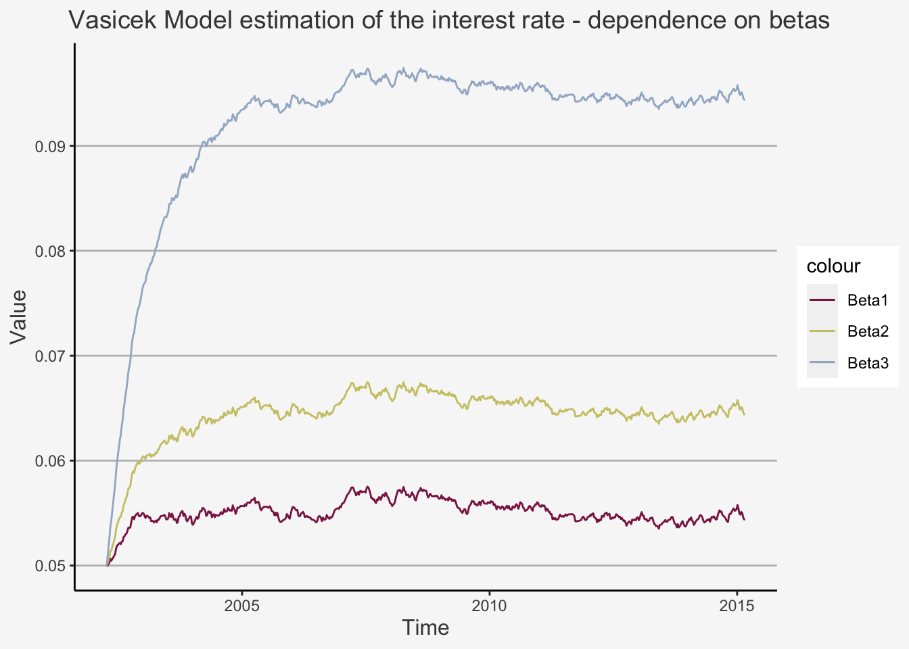
As expected, the beta values define the level of the long-term average. As such, a larger beta implies a greater difference term in the first equation. Since the long-term average will converge at the respective beta value, the differences are accordingly.
5.6.1.2 Density of the rate parameter
The authors show that the Vasicek model follows a normal distribution with the first two moments defined as:
\[ E[r|r_t] =r_te^{-a(t-s)} + b(1-e^{-a(t-s)}) \]
as well as:
\[ var(r|r_t) = \frac{\sigma^2}{2a}(1-e^{-2a(t-s)}) \]
Based on these moments, we can define the probability distribution based on individual parameter combinations.
library(patchwork)
vas_pdf <- function(x, a, b, sigma, t, s, r0 = 0.02){
mean <-r0*exp(-a*(t-s))+b*(1-exp(-a*(t-s)))
var <- sigma^2/(2*a)*(1-exp(-2*a*(t-s)))
dnorm(x, mean = mean, sd = var)
}
# Define the x variable
x <- seq(-0.2, 0.2, length = 2000)
par(xpd = T ,mar = c(2,2,2,2), mfrow = c(2,2))
# Define the different y variables
y_st <- sapply(c(2,4,8,15), function(t){set.seed(2014); vas_pdf(x, 0.1, 0.05, 0.12, t, 0, 0.02)})
y_a <- sapply(c(.1, .2, .3, .4), function(a){set.seed(2014); vas_pdf(x, a, 0.05, 0.12, 7, 0, 0.02)})
y_b <- sapply(c(0.1, 0.12, 0.16, 0.19), function(b){set.seed(2014); vas_pdf(x, 0.1, b, 0.12, 7, 0, 0.02)})
y_sigma <- sapply(c(0.1, 0.12, 0.16, 0.19), function(sigma){set.seed(2014); vas_pdf(x, 0.1, 0.05, sigma, 7, 0, 0.02)})
# Create the data frames
xy_st <- as.data.frame(cbind(y_st, x))
colnames(xy_st) <- c("Delta_T = 2", "Delta_T = 4", "Delta_T = 8", "Delta_T = 15", "x")
xy_a <- as.data.frame(cbind(y_a,x))
colnames(xy_a) <- c("a = 0.1", "a = 0.2", "a = 0.3", "a = 0.4", "x")
xy_b <- as.data.frame(cbind( y_b, x))
colnames(xy_b) <- c("b = 0.1", "b = 0.12", "b = 0.16", "b = 0.19", "x")
xy_sigma <- as.data.frame(cbind(y_sigma, x))
colnames(xy_sigma) <- c("s = 0.1", "s = 0.12", "s = 0.16", "s = 0.19", "x")
st <- xy_st %>%
ggplot(aes(x = x, y = `Delta_T = 2`, color = "Delta_T = 2")) + geom_line() +
geom_line(aes(x = xy_st$x , y = xy_st$`Delta_T = 4`, color = "Delta_T = 4")) +
geom_line(aes(x = xy_st$x , y = xy_st$`Delta_T = 8`, color = "Delta_T = 8")) +
geom_line(aes(x = xy_st$x , y = xy_st$`Delta_T = 15`, color = "Delta_T = 15")) +
ggtitle("CIR Model estimation - dependence on Time") +
ylab("PDF") + xlab("Yield") +
scale_fill_manual(values=c("goldenrod", "lightsteelblue3", "dodgerblue4", "violetred4")) +
scale_color_manual(values=c("violetred4", "khaki3", "lightsteelblue3", "dodgerblue4", "violetred4")) +
theme(plot.title= element_text(size=14, color="grey26",
hjust=0.1,
lineheight=1.2), panel.background = element_rect(fill="#f7f7f7"),
panel.grid.major.y = element_line(size = 0.5, linetype = "solid", color = "grey"),
panel.grid.minor = element_blank(),
panel.grid.major.x = element_blank(),
plot.background = element_rect(fill="#f7f7f7", color = "#f7f7f7"), axis.title.x = element_text(color="grey26", size=12),
axis.title.y = element_text(color="grey26", size=12),
axis.line = element_line(color = "black"))
a <- xy_a %>%
ggplot(aes(x = x, y = `a = 0.1`, color = "a = 0.1")) + geom_line() +
geom_line(aes(x = xy_a$x , y = xy_a$`a = 0.2`, color = "a = 0.2")) +
geom_line(aes(x = xy_a$x , y = xy_a$`a = 0.3`, color = "a = 0.3")) +
geom_line(aes(x = xy_a$x , y = xy_a$`a = 0.4`, color = "a = 0.4")) +
ggtitle("CIR Model estimation - dependence on alpha") +
ylab("PDF") + xlab("Yield") +
scale_fill_manual(values=c("goldenrod", "lightsteelblue3", "dodgerblue4", "violetred4")) +
scale_color_manual(values=c("violetred4", "khaki3", "lightsteelblue3", "dodgerblue4", "violetred4")) +
theme(plot.title= element_text(size=14, color="grey26",
hjust=0.1,
lineheight=1.2), panel.background = element_rect(fill="#f7f7f7"),
panel.grid.major.y = element_line(size = 0.5, linetype = "solid", color = "grey"),
panel.grid.minor = element_blank(),
panel.grid.major.x = element_blank(),
plot.background = element_rect(fill="#f7f7f7", color = "#f7f7f7"), axis.title.x = element_text(color="grey26", size=12),
axis.title.y = element_text(color="grey26", size=12),
axis.line = element_line(color = "black"))
b <- xy_b %>%
ggplot(aes(x = x, y = `b = 0.1`, color = "b = 0.1")) + geom_line() +
geom_line(aes(x = xy_b$x , y = xy_b$`b = 0.12`, color = "b = 0.12")) +
geom_line(aes(x = xy_b$x , y = xy_b$`b = 0.16`, color = "b = 0.16")) +
geom_line(aes(x = xy_b$x , y = xy_b$`b = 0.19`, color = "b = 0.19")) +
ggtitle("CIR Model estimation - dependence on beta") +
ylab("PDF") + xlab("Yield") +
scale_fill_manual(values=c("goldenrod", "lightsteelblue3", "dodgerblue4", "violetred4")) +
scale_color_manual(values=c("violetred4", "khaki3", "lightsteelblue3", "dodgerblue4", "violetred4")) +
theme(plot.title= element_text(size=14, color="grey26",
hjust=0.1,
lineheight=1.2), panel.background = element_rect(fill="#f7f7f7"),
panel.grid.major.y = element_line(size = 0.5, linetype = "solid", color = "grey"),
panel.grid.minor = element_blank(),
panel.grid.major.x = element_blank(),
plot.background = element_rect(fill="#f7f7f7", color = "#f7f7f7"), axis.title.x = element_text(color="grey26", size=12),
axis.title.y = element_text(color="grey26", size=12),
axis.line = element_line(color = "black"))
sig <- xy_sigma %>%
ggplot(aes(x = x, y = `s = 0.1`, color = "s = 0.1")) + geom_line() +
geom_line(aes(x = xy_sigma$x , y = xy_sigma$`s = 0.12`, color = "s = 0.12")) +
geom_line(aes(x = xy_sigma$x , y = xy_sigma$`s = 0.16`, color = "s = 0.16")) +
geom_line(aes(x = xy_sigma$x , y = xy_sigma$`s = 0.19`, color = "s = 0.19")) +
ggtitle("CIR Model estimation - dependence on sigma") +
ylab("PDF") + xlab("Yield") +
scale_fill_manual(values=c("goldenrod", "lightsteelblue3", "dodgerblue4", "violetred4")) +
scale_color_manual(values=c("violetred4", "khaki3", "lightsteelblue3", "dodgerblue4", "violetred4")) +
theme(plot.title= element_text(size=14, color="grey26",
hjust=0.1,
lineheight=1.2), panel.background = element_rect(fill="#f7f7f7"),
panel.grid.major.y = element_line(size = 0.5, linetype = "solid", color = "grey"),
panel.grid.minor = element_blank(),
panel.grid.major.x = element_blank(),
plot.background = element_rect(fill="#f7f7f7", color = "#f7f7f7"), axis.title.x = element_text(color="grey26", size=12),
axis.title.y = element_text(color="grey26", size=12),
axis.line = element_line(color = "black"))
st + a + b + sig + plot_layout(ncol = 2, heights = c(5, 5))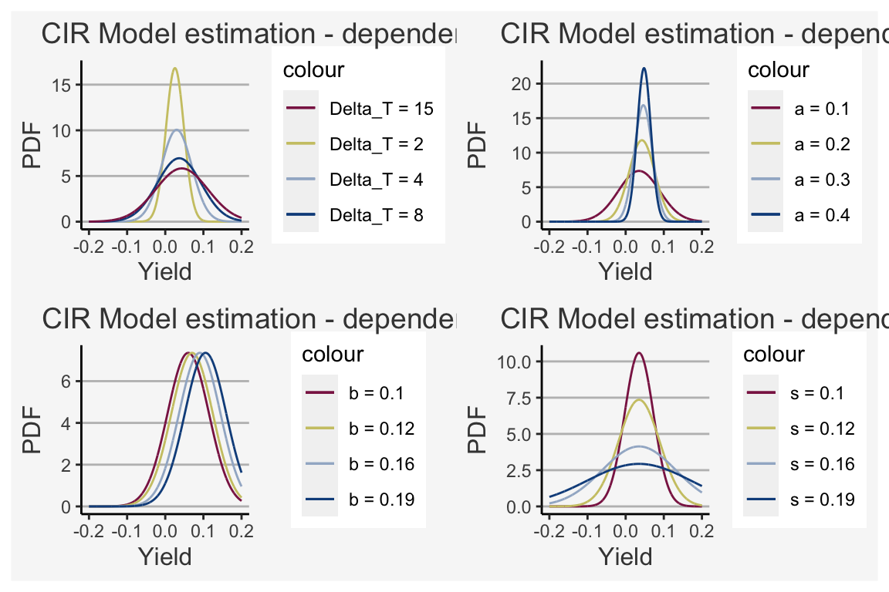
We can observe again the following:
- beta only has an impact on the location, but not on the variance, of the long-term average rate
- an increasing alpha will converge quicker at the long-term average
- An increase in time will increase the spread of the rate
- higher volatility increases the spread, apparently
5.6.1.3 Calculation of ZCB rates and yield curve
With Vasicek, the Price of a ZCB at time t can be calculated as:
\[ P_{t,s} = A_{t,s}e^{-B_{t,s}, r_t} \]
where rt is the value of the short rate at time t,
\[ B_{t,s} = \frac{1-e^{-a(s-t)}}{a} \]
as well as
\[ A_t = exp\left[\frac{(B_{t,s} - (s-t))(a^2b-\frac{\sigma_r^2}{2})}{a^2} - \frac{\sigma_r^2B_{t,s}}{4a}\right] \]
Based on this, we can determine the following relationship between the bond prices and the yield curve:
\[ R(r,T) = - \frac{1}{s-t}\ln P(t,T) \]
In essence, \(A_t\) is a level parameter and \(B_{t,s}\) is a drift parameter depending on t and s (so the difference between two periods). In their paper, the authors estimate a = 0.1779, b = 0.0866, and \(\sigma_r\) = 0.02. Using r = 0.07, we can compute the ZCB Price after Vasicek
# Inputs
a <- 0.1779
b <- 0.0866
sigma_r <- 0.02
r <- 0.07
s <- 10
t <- 0
# Calculate Vasicek as function
Vas_Spot <- function(a, b, sigma_r, r, s, t, get_vola = F){
B_t <- ifelse(a == 0, T, (1-exp(-a*(s-t)))/a)
A_t <- ifelse(a == 0, exp(sigma_r^2 * s^3 / 6), exp((B_t - (s-t))*(a^2*b-sigma_r^2/2)/a^2 - (sigma_r^2*B_t)/(4*a)))
P_t = A_t*exp(-B_t*r)
R = ifelse((s-t) > 0, -log(P_t) / (s-t), r)
if (get_vola == F) {
return(P_t)
}
else{
return(R)
}
}
Vas_Spot(a, b, sigma_r, r, s, t, get_vola = F)## [1] 0.4688846Vas_Spot(a, b, sigma_r, r, s, t, get_vola = T)## [1] 0.07573986As we can see, the Price change of a ZCB in the Vasicek model is 0.468*Price of the actual ZCB with an underlying volatility of the zero yield of 0.076.
5.6.2 Cox, Ingersoll, and Ross - CIR Model
The Cox, Ingersoll, and Ross (CIR) model is another commonly used interest rate model. The difference between CIR and Vasicek is that the former assumes the volatility depends also on the square root of the short rate.
The CIR model is as follows:
\[ dr = a(b-r)dt + \sigma\sqrt{r}dz \]
Presuming that \(\sigma_r = \sigma\sqrt{r}\), we assume a higher volatility here.
As is apparent, the long-term average will again be beta and the drift parameter is alpha. The major difference lays in the fact that the volatility term is not constant. Rather, it is proportional to the square root of the interest rate. Due to this difference, we understand that the probability distribution of the short rates follows a \(\chi^2\) distribution with n degrees of freedom and m denoting the drift parameter. As such, we define the interest rate as:
\[ f[r|r_t] = 2c\chi^2_{2q+2,2u}[2cr] \]
whereas \(c = \frac{2a}{\sigma^2(1-e^{-a(t-s)})}\), \(u = cr_te^{-a(t-s)}\) and \(q = \frac{2ab}{\sigma^2}-1\).
5.6.2.1 Density of the rate parameter
The authors show that the CIR model follows a \(\chi^2\) distribution with the first two moments defined as:
\[ E[r|r_t] =r_te^{-a(t-s)} + b(1-e^{-a(t-s)}) \]
as well as:
\[ var(r|r_t) = \frac{\sigma^2r_t}{a}(e^{-a(t-s)} - e^{-2a(t-s)}) + \frac{\sigma^2b}{2a}(1-e^{-a(t-s)})^2 \]
Based on these moments, we can again define the probability distribution based on individual parameter combinations.
cir_pdf <- function(x, a, b, sigma, t, s, r0 = 0.02){
q = (2*a*b)/(sigma^2) - 1
c = (2*a)/(sigma^2*(1-exp(-a*(t-s))))
u = c*r0*exp(-a*(t-s))
2*c*dchisq(2*c*x, 2*q+2, ncp = 2*u)
}
# Define the x variable
x <- seq(-0.05, 0.2, length = 2000)
par(xpd = T ,mar = c(2,2,2,2), mfrow = c(2,2))
# Define the different y variables
y_st <- sapply(c(1, 2, 5, 15), function(t){set.seed(2014); cir_pdf(x, 0.3, 0.05, 0.12, t, 0, 0.05)})
y_a <- sapply(c(.2, .4, .6, .8), function(a){set.seed(2014); cir_pdf(x, a, 0.05, 0.12, 7, 0, 0.05)})
y_b <- sapply(c(0.1, 0.12, 0.16, 0.19), function(b){set.seed(2014); cir_pdf(x, 0.3, b, 0.12, 7, 0, 0.05)})
y_sigma <- sapply(c(0.01, 0.03, .05, .11), function(sigma){set.seed(2014); cir_pdf(x, 0.3, 0.05, sigma, 7, 0, 0.05)})
# Create the data frames
xy_st <- as.data.frame(cbind(y_st, x))
colnames(xy_st) <- c("Delta_T = 1", "Delta_T = 2", "Delta_T = 5", "Delta_T = 15", "x")
xy_a <- as.data.frame(cbind(y_a,x))
colnames(xy_a) <- c("a = 0.2", "a = 0.4", "a = 0.6", "a = 0.8", "x")
xy_b <- as.data.frame(cbind( y_b, x))
colnames(xy_b) <- c("b = 0.1", "b = 0.12", "b = 0.16", "b = 0.19", "x")
xy_sigma <- as.data.frame(cbind(y_sigma, x))
colnames(xy_sigma) <- c("s = 0.01", "s = 0.03", "s = 0.05", "s = 0.1", "x")
st <- xy_st %>%
ggplot(aes(x = x, y = `Delta_T = 1`, color = "Delta_T = 1")) + geom_line() +
geom_line(aes(x = xy_st$x , y = xy_st$`Delta_T = 2`, color = "Delta_T = 2")) +
geom_line(aes(x = xy_st$x , y = xy_st$`Delta_T = 5`, color = "Delta_T = 5")) +
geom_line(aes(x = xy_st$x , y = xy_st$`Delta_T = 15`, color = "Delta_T = 15")) +
ggtitle("CIR Model estimation - dependence on Time") +
ylab("PDF") + xlab("Yield") +
scale_fill_manual(values=c("goldenrod", "lightsteelblue3", "dodgerblue4", "violetred4")) +
scale_color_manual(values=c("violetred4", "khaki3", "lightsteelblue3", "dodgerblue4", "violetred4")) +
theme(plot.title= element_text(size=14, color="grey26",
hjust=0.1,
lineheight=1.2), panel.background = element_rect(fill="#f7f7f7"),
panel.grid.major.y = element_line(size = 0.5, linetype = "solid", color = "grey"),
panel.grid.minor = element_blank(),
panel.grid.major.x = element_blank(),
plot.background = element_rect(fill="#f7f7f7", color = "#f7f7f7"), axis.title.x = element_text(color="grey26", size=12),
axis.title.y = element_text(color="grey26", size=12),
axis.line = element_line(color = "black"))
a <- xy_a %>%
ggplot(aes(x = x, y = `a = 0.2`, color = "a = 0.2")) + geom_line() +
geom_line(aes(x = xy_a$x , y = xy_a$`a = 0.4`, color = "a = 0.4")) +
geom_line(aes(x = xy_a$x , y = xy_a$`a = 0.6`, color = "a = 0.6")) +
geom_line(aes(x = xy_a$x , y = xy_a$`a = 0.8`, color = "a = 0.8")) +
ggtitle("CIR Model estimation - dependence on alpha") +
ylab("PDF") + xlab("Yield") +
scale_fill_manual(values=c("goldenrod", "lightsteelblue3", "dodgerblue4", "violetred4")) +
scale_color_manual(values=c("violetred4", "khaki3", "lightsteelblue3", "dodgerblue4", "violetred4")) +
theme(plot.title= element_text(size=14, color="grey26",
hjust=0.1,
lineheight=1.2), panel.background = element_rect(fill="#f7f7f7"),
panel.grid.major.y = element_line(size = 0.5, linetype = "solid", color = "grey"),
panel.grid.minor = element_blank(),
panel.grid.major.x = element_blank(),
plot.background = element_rect(fill="#f7f7f7", color = "#f7f7f7"), axis.title.x = element_text(color="grey26", size=12),
axis.title.y = element_text(color="grey26", size=12),
axis.line = element_line(color = "black"))
b <- xy_b %>%
ggplot(aes(x = x, y = `b = 0.1`, color = "b = 0.1")) + geom_line() +
geom_line(aes(x = xy_b$x , y = xy_b$`b = 0.12`, color = "b = 0.12")) +
geom_line(aes(x = xy_b$x , y = xy_b$`b = 0.16`, color = "b = 0.16")) +
geom_line(aes(x = xy_b$x , y = xy_b$`b = 0.19`, color = "b = 0.19")) +
ggtitle("CIR Model estimation - dependence on beta") +
ylab("PDF") + xlab("Yield") +
scale_fill_manual(values=c("goldenrod", "lightsteelblue3", "dodgerblue4", "violetred4")) +
scale_color_manual(values=c("violetred4", "khaki3", "lightsteelblue3", "dodgerblue4", "violetred4")) +
theme(plot.title= element_text(size=14, color="grey26",
hjust=0.1,
lineheight=1.2), panel.background = element_rect(fill="#f7f7f7"),
panel.grid.major.y = element_line(size = 0.5, linetype = "solid", color = "grey"),
panel.grid.minor = element_blank(),
panel.grid.major.x = element_blank(),
plot.background = element_rect(fill="#f7f7f7", color = "#f7f7f7"), axis.title.x = element_text(color="grey26", size=12),
axis.title.y = element_text(color="grey26", size=12),
axis.line = element_line(color = "black"))
sig <- xy_sigma %>%
ggplot(aes(x = x, y = `s = 0.01`, color = "s = 0.01")) + geom_line() +
geom_line(aes(x = xy_sigma$x , y = xy_sigma$`s = 0.03`, color = "s = 0.03")) +
geom_line(aes(x = xy_sigma$x , y = xy_sigma$`s = 0.05`, color = "s = 0.05")) +
geom_line(aes(x = xy_sigma$x , y = xy_sigma$`s = 0.1`, color = "s = 0.1")) +
ggtitle("CIR Model estimation - dependence on sigma") +
ylab("PDF") + xlab("Yield") +
scale_fill_manual(values=c("goldenrod", "lightsteelblue3", "dodgerblue4", "violetred4")) +
scale_color_manual(values=c("violetred4", "khaki3", "lightsteelblue3", "dodgerblue4", "violetred4")) +
theme(plot.title= element_text(size=14, color="grey26",
hjust=0.1,
lineheight=1.2), panel.background = element_rect(fill="#f7f7f7"),
panel.grid.major.y = element_line(size = 0.5, linetype = "solid", color = "grey"),
panel.grid.minor = element_blank(),
panel.grid.major.x = element_blank(),
plot.background = element_rect(fill="#f7f7f7", color = "#f7f7f7"), axis.title.x = element_text(color="grey26", size=12),
axis.title.y = element_text(color="grey26", size=12),
axis.line = element_line(color = "black"))
st + a + b + sig + plot_layout(ncol = 2, heights = c(5, 5))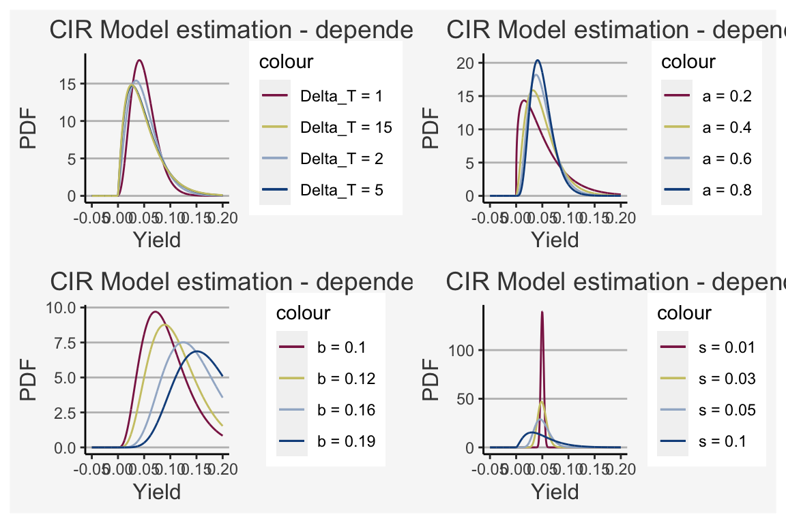
Apart from the fact that we have the usual \(\chi^2\) distribution present, we can observe the following:
- Increasing time again increases the spread
- Smaller alphas decline the spread
- beta values now change the mean as well as the density
- an increasing volatility increases the spread of the rate
5.6.2.2 Calculation of ZCB rates and yield curve
Under the CIR model, the price of a zero coupon bond at time t is again:
\[ P_{t,s} = A_{t,s}e^{-B_{t,s}, r_t} \]
whereas:
\[ B_{t,s} = \frac{2e_T}{(\gamma + a)e_T + 2\gamma} \]
\[ A_{t,s} = \frac{2\gamma e^{\gamma + a}(s-t)/2}{((\gamma + a)e_T + 2\gamma)^{2ab/\sigma_r^2}} \]
and
\[ \gamma = \sqrt{a^2 + 2\sigma^2} \]
\[ e_T = e^{\gamma (s-t) } - 1 \]
As we can see, the model parameters are now dependent on an additional parameter \(\gamma\), which is a drift parameter for a poly volatility structure.
We can again calculate the price according to the CIR model configuration as follows:
# Inputs
a <- 0.1779
b <- 0.0866
sigma_r <- 0.02
r <- 0.07
s <- 10
t <- 0
# Calculate Vasicek as function
CIR_Spot <- function(a, b, sigma_r, r, s, t, get_vola = F){
c_t <- sqrt(a^2 + 2 * sigma_r^2)
e_t <- exp(c_t*(s-t)) - 1
B_t <- (2*e_t)/((c_t + a)*e_t + 2*c_t)
A_t <- (2*c_t*exp(c_t + a)*(s-t)/2)/((c_t + a)*e_t + 2*c_t)^(2*a*b/sigma_r)
P_t = A_t*exp(-B_t*r)
R = ifelse((s-t) > 0, -log(P_t) / (s-t), r)
if (get_vola == F) {
return(P_t)
}
else{
return(R)
}
}
CIR_Spot(a, b, sigma_r, r, s, t, get_vola = F)## [1] 0.5633079CIR_Spot(a, b, sigma_r, r, s, t, get_vola = T)## [1] 0.05739288As we can see, the Price change of a ZCB in the CIR model is 0.5633079*Price of the actual ZCB with an underlying volatility of the zero yield of 0.05739288. Assuming a par value of 1000 US Dollars, we understand that the price of a 10-year ZCB is approximately 563.31 US Dollars.
5.7 Convertible Bonds
Let’s now consider a different form of bond, the so-called convertible bond (CB). CBs are called like this because they have a conversion feature. That is, they can be converted from a debt to an equity instrument. . Convertible bonds are hybrid financial instruments with complex features, because they have characteristics of both debts and equities, and usually several equity options are embedded in this kind of contracts. The optimality of the conversion decision depends on equity price, future interest rate and default probability of the issuer.
5.7.1 Main Idea of CBs
Due to their structure, they are often issued by companies with low credit ratings and high potential growth opportunities. These firms can lower their interest costs by giving the right to convert the bond into a specified number of shares. Accordingly, the argument for CBs is the following:
- Investors have the upside potential that they can acquire equity cheaply if the company takes off, while being protected with the cash flow payments of the bond
- The company benefits since the conversion inadvertently decreases the leverage of the company. However, one drawdown is the stock dilusion at conversion
As such, any CB has three stages: In-the-Money, At-the-Money as well as Out-of-the-Money CBs.
- In-the-Money CBs are identical to equity. This happens if the conversion price is lower than the equity price
- At-the-Money CBs are both equity and debt. This happens if the conersion price is exactly the equity price
- Out-of-the-Money CBs are considered debt. This happens if the conversion price is higher than the equity price
Consequently, any CB acts like an option, with the downside risk equal to the bond price (including cash flows and final value, discounted) as well as a potentially limitless upside risk increasing with the share price. Let’s quickly consider how we can price such a CB. In order to do so, we expect you to be familiar with the usual Black-Scholes Model for options pricing. Although we will only consider this in later chapters, we will still give a short introduction to the subject at hand.
The main idea of pricing a CB is to price both the equity and debt part individually.
5.7.2 Individual constituents of CBs
In order to be able to price CBs, we first need to consider what constitutes a CB and how its individual parts play along. Although there are a number of options for CBs, the one we are going to have a look at is a European CB. As with general options, this implies that execution is restricted to a specific date, rather than a time interval. Consequently, we can only execute this instrument at maturity.
In order to value a CB, we need to gather information on three distinct areas: Bond Parameters, which defines the underlying parameters of the bond value, Valuation Process (usually Black-Scholes to calculate the option value of conversion) as well as Date Parameters, which define the date parameters of the bond.
Bond Parameters includes the following quantities:
- B: The face amount of the bond
- M: The conversion ratio
- CS: The Credit Spread (Difference of bid and ask price)
- Id: Issue date of the bond
- mD: Maturity Date of the bond (their difference equals t: the time until maturity)
- e: Exercise option (either US or EU)
Based on these parameters, thus, we can now specify the BS process to evaluate the option.
Valuation Process includes the following quantities:
- S: The price of the underlying
- vola: Volatility of the share price
- DY: Dividend Yield
- rff: Risk-Free Rate
You can already see if you every got acquainted with options that these parameters are basically what you would also have when evaluating normal options. So, now we have created the pricing process, but we need to consider the actual trading times and quantities. We do so with the Date Parameters:
- settlementDays: The settlement days of eligibility
- dayCounter: day counter convention (trading days each year - can have many values but usually 360)
- period: interest compounding interval
- businessDayConvention: usual business days in a trading week
Based on these three parameters, we can create a CB. We deliberately chose this set-up because it follows exactly the set-up needed for the function ConvertibleFixedCouponBond of the RQuantLib package, which allows us to simply calculate Convertible Fixed Coupon Bonds, Convertible Floating Coupon Bonds, as well as Convertible Zero Coupon Bonds.
Consequently, let’s consider a 10-year CB with 1000.- par value. The coupon is 5.785% with semi-annual interest payment. The execution right is par at maturity to 5 shares of common stock. We just assume the interest rate to be at 2%. Further, the Credit Spread of the bond is 1.5%. The price of the stock is 15.-, its volatility 13% and has zero dividend yield.
# To create the function, we first need to consider the dates of interest
today <- as.Date("2021-12-05")
params <- list(tradeDate = today - 2, settleDate = today, dt = 0.25)
# Then, we create a times argument which tells the function how many times they need to repeat the functions below
times <- seq(0, 10, 0.1)
dividendYield <- DiscountCurve(params, list(flat = 10e-6), times)
riskFreeRate <- DiscountCurve(params, list(flat = 0.02), times)
# We need to set the parameters as a list-based object
# First, the bond parameters with a maturity date of 1900 days in the future
bondparams <- list(
exercise = "eu",
faceAmount = 1000,
creditSpread = 0.015,
conversionRatio = 5,
issueDate = as.Date(today + 2),
maturityDate = as.Date(today + 1900)
)
# Then the B/S process. We need to define both risk free and Dividend Yield like this b/c we need to set it equal throughout time.
process <- list(
underlying = 15,
divYield = dividendYield,
rff = riskFreeRate,
volatility = 0.13
)
# Lastly, the date specification
dateparams <- list(
settlementDays = 3,
dayCounter = "ActualActual",
period = "Semiannual",
businessDayConvention = "Unadjusted"
)
# Now, we can create the CB with fixed coupon payments by administering all the relevant information:
CB <- ConvertibleFixedCouponBond(bondparams, coupon = 0.05785, process,
dateparams)
CB## Concise summary of valuation for ConvertibleFixedCouponBond
## Net present value : 115.4129
## clean price : 115.37
## dirty price : 115.41
## accrued coupon : 0.047548
## yield : 0.025804
## cash flows :
## Date Amount
## 2022-02-17 1.1412
## 2022-08-17 2.8687
## 2023-02-17 2.9163
## 2023-08-17 2.8687
## 2024-02-17 2.9142
## 2024-08-17 2.8767
## 2025-02-17 2.9103
## 2025-08-17 2.8687
## 2026-02-17 2.9163
## 2026-08-17 2.8687
## 2027-02-17 2.9163
## 2027-02-17 100.0000As we can see, the NPV of the CB is 105.8078, with an accrued coupon of 0.0475 and a Yield of 0.045. This implies that the CB has a value of 105.8078 given the assumptions made and the distributional characteristics of the B/S bond structure. The accrued coupon is the coupon adjusted for the exercising option. Further, the yield is calculated through the reverse formula for the bond price.
We can take one step further and assess how the price of the CB depends on certain parameters through the sapply function.
# For vola
res_cb_vola <- sapply(seq(0.01,0.9,0.01), function(s) {
process$volatility = s
ConvertibleFixedCouponBond(bondparams, coupon = 0.05785, process,
dateparams)$NPV
})
# For price
res_cb_price <- sapply(seq(1,40,1), function(s) {
process$underlying = s
ConvertibleFixedCouponBond(bondparams, coupon = 0.05785, process,
dateparams)$NPV
})
# For rf
res_cb_rf <- sapply(seq(0.01, 0.1, 0.01), function(s) {
s = DiscountCurve(params, list(flat = s), times)
process$rff = s
ConvertibleFixedCouponBond(bondparams, coupon = 0.05785, process,
dateparams)$NPV
})
# For bond params credit spread
res_cb_cs <- sapply(seq(0.01, 0.1, 0.005), function(s) {
bondparams$creditSpread = s
ConvertibleFixedCouponBond(bondparams, coupon = 0.05785, process,
dateparams)$NPV
})
# For conversion ratio
res_cb_cr <- sapply(seq(1, 20, 1), function(s) {
bondparams$conversionRatio = s
ConvertibleFixedCouponBond(bondparams, coupon = 0.05785, process,
dateparams)$NPV
})Based on those values, we can easily plot the NPV. We just do this for one but we could potentially enlarge this to multiple options at once.
vola_CB <- as.data.frame(cbind(seq(0.01,0.9,0.01), res_cb_vola))
colnames(vola_CB) <- c("Volatility of Stock", "NPV CB")
vola_CB %>%
ggplot(aes(x=`Volatility of Stock`, y = `NPV CB`)) + geom_line() +
ggtitle("CB NPV value based on volatility") +
ylab("Value NPV") + xlab("Volatility") +
scale_fill_manual(values=c("goldenrod", "lightsteelblue3", "dodgerblue4", "violetred4")) +
scale_color_manual(values=c("violetred4", "khaki3", "lightsteelblue3", "dodgerblue4", "violetred4")) +
theme(plot.title= element_text(size=14, color="grey26",
hjust=0.1,
lineheight=1.2), panel.background = element_rect(fill="#f7f7f7"),
panel.grid.major.y = element_line(size = 0.5, linetype = "solid", color = "grey"),
panel.grid.minor = element_blank(),
panel.grid.major.x = element_blank(),
plot.background = element_rect(fill="#f7f7f7", color = "#f7f7f7"), axis.title.x = element_text(color="grey26", size=12),
axis.title.y = element_text(color="grey26", size=12),
axis.line = element_line(color = "black")) + labs(fill='Swiss Government Bonds') + labs(color='Difference in Yield')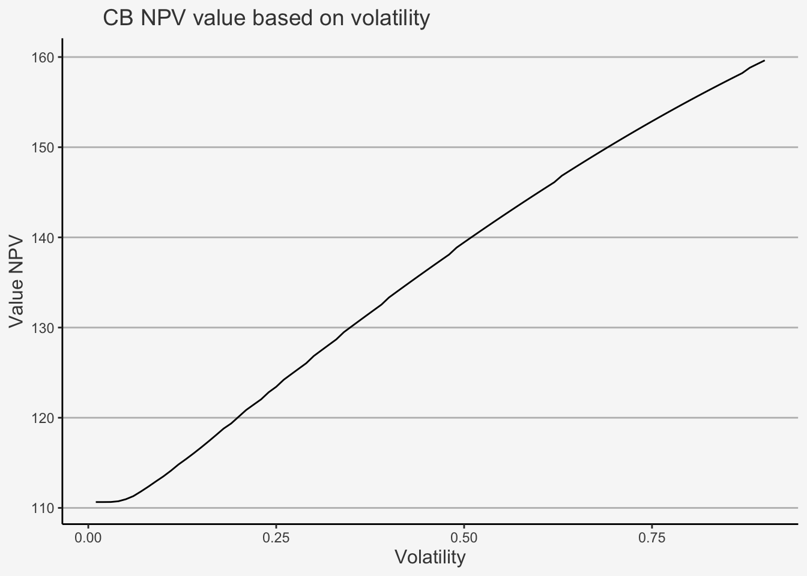